文献（hydroelastic、神经网络接触模型）、NeuralIPC 代码、Genesis + hydroelastic demo、实验方案、问题与待决定。
精细仿真（IPC 接触 + FEM）准确但慢。粗模型（刚体 6 自由度、3D 仿射体 12 自由度）快，但不能表达接触区局部变形，接触时两物体会重叠。需要一条规则：给定重叠，产生多大接触力。
- hydroelastic（下文简称 hydro）：Drake 与 Genesis 的做法，用人工设定的压力场计算接触力
- Drake：开源的机器人仿真与设计工具箱，由 R. Tedrake 与 Drake 开发团队开发，用来在电脑里模拟机器人和它抓取、碰到的物体。hydro 的三篇原论文（1.1–1.3）作者都在丰田研究院（Toyota Research Institute），模型就是为 Drake 提出的，开源实现也放在 Drake 里
- Genesis（现名 Genesis World）：开源的通用物理仿真平台，2024 年 12 月起于学术项目、现由 Genesis AI 公司支持，一个场景里可以同时放刚体、FEM 软体等多种物体。它也实现了 hydro（和 1.3 的 SAP 求解器配在一起）；另有一套接触是调用开源库 libuipc 做 IPC。本项目的演示、参数扫描都在 Genesis 里跑，IPC 部分走它调用的 libuipc
- 本项目：神经网络学习碰撞能量 \(U_c\)，接触力由其求导得到
本页结论：hydro 的压强只取决于局部穿入深度；E1–E5 从不同角度说明该假设在弹性体上不成立，且比值判据下调参无法弥补。本项目的 IPC 标签在 E0–E3、E5 与 E4（\(\nu\le0.45\)）与裁判一致；网络能否复现是下一步。
文献：Hydroelastic 与 Hertz 解析解
本节梳理 hydro 从"重叠"到"接触力"的计算链条（1.1 压强怎么来，1.2 压强怎么变成求解器用的力，1.3 怎么求解），提取其建模假设；1.4 给出用于比较的解析解。
1.1 Elandt et al. 2019：压力场模型
做法
推导：压力场模型（预设压强场 → 等压接触面 → 接触力）
① 预设压强场
已知：物体的形状、材料模量 \(E\)；求：物体内每一点的预设压强 \(p_0\)。
\[\begin{cases}\color{#c0392b}{\nabla^2\epsilon=0\ \ \text{（物体内）}} & \color{#c0392b}{(1)}\\[4pt] \color{#c0392b}{\epsilon=0\ \text{（表面）},\quad \epsilon=1\ \text{（中轴）}} & \color{#c0392b}{(2)}\\[4pt] \color{#c0392b}{p_0=E\,\epsilon} & \color{#c0392b}{(3)}\end{cases}\ \color{#c0392b}{\Longrightarrow\ \text{固定在物体上的压强场 } p_0(\mathbf x)}\]
式 (1)：\(\epsilon\) 是穿入程度，物体内每一点一个数，表示这一点「在物体里有多深」；\(\nabla^2\) 是拉普拉斯算子，三个方向的二阶导数之和。方程说的是：每一点的 \(\epsilon\) 等于它周围一圈的平均值，所以 \(\epsilon\) 在物体里平滑变化，没有尖峰和突跳。用它是因为对任意形状都能解出一个光滑的「深度」，像一块金属板边缘冷、中心热时达到稳态的温度分布。
式 (2)：中轴是物体内离表面最远的点组成的集合，球的中轴就是球心。这两个边界条件把 \(\epsilon\) 钉住：表面上为 0，最里面为 1，所以从表面往里 \(\epsilon\) 从 0 平滑升到 1。
式 (3)：\(E\) 是材料的杨氏模量，即单轴拉压时应力与应变之比，材料越硬越大；\(p_0\) 是这一点的预设压强。它说的是：一点的压强 = 材料硬度 × 这一点的穿入程度，越往里压强越大，材料越硬同样深处压强越大。这是人为规定的，不来自力学平衡，目的是让压得越深推得越狠、越硬推得越狠。
结果：这个场离线算好后固定在物体上，与对面压进来的是什么无关，这正是下面「假设一」的来源。离表面越深 → 压强越大，因为 \(\epsilon\) 从表面 0 一路升到中轴 1。
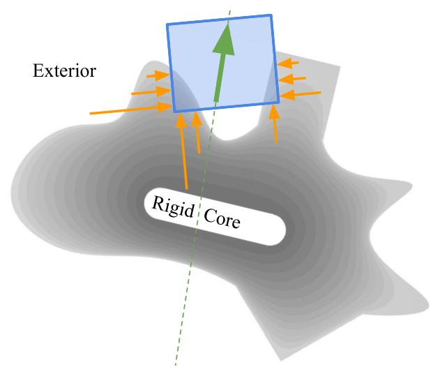
Elandt 原论文 Fig. 2：一个形状不规则的柔性物体（灰色）里用 Laplace 方程算出的压力场。灰色越深压力越大：外表面（Exterior 一侧）为 0，越往中间的刚性核心（Rigid Core）越大。蓝色方块是压进来的刚体，橙色箭头是物体压在方块上的压力，绿色箭头是合力。可以看出每一点的压力只看它在物体里有多深，与压进来的是什么无关。
推导
解式 (1) \(\nabla^2\epsilon=0\)，边界条件取式 (2) 表面 \(\epsilon=0\)、中轴 \(\epsilon=1\)，得到物体内每点的 \(\epsilon(\mathbf x)\)；再代入式 (3)：
\[p_0(\mathbf x)=E\,\epsilon(\mathbf x)\]
② 等压接触面
已知：两物体 A、B 各自的压强场，物体用四面体网格表示；求：两物体重叠时的接触面。
\[\begin{cases}\color{#c0392b}{p_{0_A}(\mathbf x)=p_{0_B}(\mathbf x)} & \color{#c0392b}{(1)}\\[4pt] \color{#c0392b}{p_{0_A}(\mathbf x)=E_A\,\boldsymbol\epsilon_A\cdot\zeta^A(\mathbf x),\quad p_{0_B}(\mathbf x)=E_B\,\boldsymbol\epsilon_B\cdot\zeta^B(\mathbf x)} & \color{#c0392b}{(2)}\end{cases}\ \color{#c0392b}{\Longrightarrow\ \text{每对相交四面体内，接触面是一块平面多边形}}\]
式 (1)：\(\mathbf x\) 是重叠区里的一点，\(p_{0_A}\)、\(p_{0_B}\) 是 A、B 在这一点的预设压强。它说的是：两个物体在重叠区里互相推，两边压强正好相等的那些点组成接触面，就像两股推力打平的分界线；之所以取相等处，是因为接触面两侧受力必须平衡，作用力等于反作用力。
式 (2)：\(E_A\) 是 A 的模量，\(\boldsymbol\epsilon_A\) 是 A 的某个四面体四个顶点的穿入程度，\(\zeta^A(\mathbf x)\) 是点 \(\mathbf x\) 在这个四面体里的重心坐标，即四个顶点的权重，和为 1，随 \(\mathbf x\) 线性变化；B 同理。它说的是：每个四面体里压强按顶点值线性插值，像一块斜坡，沿任何方向都均匀升降。
结果：两块线性斜坡相等的点构成一个平面，所以接触面在每对相交四面体里是一块平面多边形，整面由这些多边形拼成。哪一侧越硬 → 接触面越靠近它原来的表面，它被压进去越少，因为它的压强升得快，在较浅处就和对面相等。
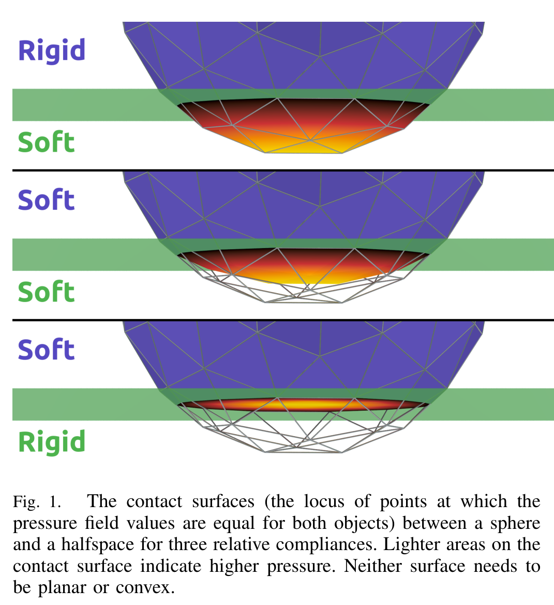
Elandt 原论文 Fig. 1：球（紫）压半空间（绿）的三种软硬组合，彩色曲面就是两侧压强相等的接触面，颜色越亮压强越大。上：球硬、半空间软，接触面贴着球面，深深压进半空间；中：两者一样软，接触面在两者中间；下：球软、半空间硬，接触面贴着半空间原表面，几乎是平的。可以看出哪一侧越硬，接触面越靠近它原来的表面。
推导
由式 (2)，重心坐标 \(\zeta\) 是 \(\mathbf x\) 的线性函数，记两侧压强为
\[p_{0_A}(\mathbf x)=\mathbf a\cdot\mathbf x+a_0,\qquad p_{0_B}(\mathbf x)=\mathbf b\cdot\mathbf x+b_0\]
代入式 (1) \(p_{0_A}=p_{0_B}\)：
\[(\mathbf a-\mathbf b)\cdot\mathbf x+(a_0-b_0)=0\]
这是一个平面方程；它与两个四面体的公共部分相交，得到一块平面多边形。
③ 接触力
已知：接触面 \(\mathcal S\) 及其上每点的压强 \(p_0\) 与单位法向 \(\hat{\mathbf n}\)；求：物体受的总接触力 \(\mathbf f\)。
\[\begin{cases}\color{#c0392b}{\mathbf T=p_0\,\hat{\mathbf n}} & \color{#c0392b}{(1)}\\[4pt] \color{#c0392b}{\mathbf f=\displaystyle\int_{\mathcal S}\mathbf T\,dS} & \color{#c0392b}{(2)}\end{cases}\ \color{#c0392b}{\Longrightarrow\ \mathbf f=\int_{\mathcal S}p_0\,\hat{\mathbf n}\;dS}\]
式 (1)：\(\mathbf T\) 是牵引，即接触面上每单位面积受到的推力；\(p_0\) 是这一点的压强；\(\hat{\mathbf n}\) 是这一点接触面的单位法向。它说的是：压强只往垂直于接触面的方向推，大小等于压强；没有摩擦时，接触面上只有这种垂直的推力。
式 (2)：\(dS\) 是接触面上一小块面积，\(\mathcal S\) 是整个接触面。它说的是：把每一小块面积上的推力加起来就是物体受的总力，就像把一片钉床上每根钉子的推力加起来。
结果：重叠越深 → 力越大，因为接触面上每点压强更大、接触面也更大；接触面越平 → 各小块推力方向越一致、合力越接近「压强 × 面积」，因为法向相同的推力不会互相抵消。
推导
把式 (1) \(\mathbf T=p_0\,\hat{\mathbf n}\) 代入式 (2) \(\mathbf f=\int_{\mathcal S}\mathbf T\,dS\)：
\[\mathbf f=\int_{\mathcal S}p_0\,\hat{\mathbf n}\;dS\]
实现
Drake 与 Genesis 取 \(\epsilon\) = 到表面距离 ÷ 物体内最大距离，因此
\[p=\frac{E_h}{D}\times\text{深度}\]
- \(E_h\)：压力场模量（Pa），人工设定。Genesis 中刚体共用 \(H\)（默认 \(10^8\) Pa），FEM 软体按材料设置（默认 \(10^7\) Pa）
- \(D\)：物体内到表面的最大距离；\(E_h/D\) 为压强梯度（Pa/m）
两者对刚体的处理不同：
- Drake：刚体自己没有压力场，只用一层表面网格表示；接触面就取刚体表面（被软体占据的那一部分），压强全部来自软体一侧的压力场。相当于刚体一侧无限硬，即 1.2「实现」里的「刚体侧梯度取无穷大」
- Genesis：刚体也带压力场，压强 = 刚体内到表面的距离 ÷ 最大距离 × \(H\)（\(H\) 默认 \(10^8\) Pa，见上）。刚体压软体时两侧都有压力场，两侧刚度像 1.2 ② 那样串联
- 直观：同样把刚体压进软体同样深，Drake 中接触面就在刚体表面上，整个重叠都由软体被压进去；Genesis 中接触面停在两侧压强相等处，会往刚体里挪一点，软体被压进去的深度比整个重叠少，刚体越软（\(H\) 越小）挪得越多
论文的验证结果
与 FEM 对比：整面贴合接触时力一致；点状接触时偏小 23%，作者归因于忽略泊松效应。
- 泊松比 \(\nu=-\varepsilon_{\text{侧}}/\varepsilon_{\text{轴}}\)：单轴压缩时侧向膨胀应变与轴向压缩应变之比，\(0\le\nu\le0.5\)，\(\nu=0.5\) 时体积不变
- 泊松效应：材料受压时向侧面膨胀，膨胀被周围材料约束会产生额外应力，因此一点的应力取决于周围材料。hydro 每点独立计算，没有这一项
结论（假设一）：hydro 每点压强只取决于该点穿入深度。论文自身结果已显示该假设在点状接触时有偏差。
1.2 Masterjohn et al. 2022：速度层面近似
Elandt 的模型配合加速度层面的变步长积分器使用（每步由力求加速度再积分，接触刚度大时步长须很小，无法实时）。1.1 的接触面由许多平面多边形拼成，本文把每块多边形改写为一根弹簧，使其可用于速度层面求解器（每步隐式求下一时刻速度，可取大步长），hydro 因此可实时运行，已在 Drake 开源。
推导：一块多边形 → 一根弹簧
① 一块多边形的力 = 面积 × 形心压强
已知：一块平面接触多边形的面积 \(A\)、形心 \(\mathbf x_c\)、形心处压强 \(p_c\)、多边形上的压强梯度 \(\nabla p\)；求：这块多边形给的法向力 \(f_n\)。
\[\begin{cases}\color{#c0392b}{f_n=\displaystyle\int_A p\,dA} & \color{#c0392b}{(1)}\\[4pt] \color{#c0392b}{p(\mathbf x)=p_c+\nabla p\cdot(\mathbf x-\mathbf x_c)} & \color{#c0392b}{(2)}\\[4pt] \color{#c0392b}{\mathbf x_c=\dfrac1A\displaystyle\int_A\mathbf x\,dA} & \color{#c0392b}{(3)}\end{cases}\ \color{#c0392b}{\Longrightarrow\ f_n=A\,p_c}\]
式 (1)：\(f_n\) 是这块多边形给的法向力，\(p\) 是多边形上的压强，\(dA\) 是一小块面积。它说的是：把每一小块面积上的推力加起来就是这块多边形的总推力；多边形是平的，各小块推的方向相同，所以只需把大小加起来。
式 (2)：\(\mathbf x\) 是多边形上的一点，\(\mathbf x_c\) 是形心，\(p_c\) 是形心处的压强，\(\nabla p\) 是压强梯度，即沿各方向每走单位长度压强变多少。它说的是：压强在多边形上像一块斜坡，形心处是 \(p_c\)，离开形心按固定斜率均匀升降。原因是多边形落在一对四面体里，而四面体内压强是按顶点值线性插值的。
式 (3)：形心的定义，即多边形上所有点位置的平均。它说的是：形心是多边形的「平衡点」，像用一根针顶住一块均匀薄板正好平衡的那一点。
结果：多边形越大、形心处压强越大 → 力越大，因为斜坡在形心两侧多出来的和少掉的正好抵消，只剩「平均压强 × 面积」，而线性函数的平均值就是形心处的值。
推导
把式 (2) \(p=p_c+\nabla p\cdot(\mathbf x-\mathbf x_c)\) 代入式 (1)：
\[f_n=\int_A p_c\,dA+\nabla p\cdot\int_A(\mathbf x-\mathbf x_c)\,dA\]
式 (3) \(\mathbf x_c=\frac1A\int_A\mathbf x\,dA\) 两边乘 \(A\) 移项：
\[\int_A(\mathbf x-\mathbf x_c)\,dA=0\]
代回：
\[f_n=p_c\,A+\nabla p\cdot0=A\,p_c\]
② 压强与重叠量：梯度串联
已知：A、B 两侧的压强梯度 \(g_A\)、\(g_B\)，该处两物体重叠的总深度 \(d\)；求：接触面上的压强 \(p\) 与合成梯度 \(g\)。
\[\begin{cases}\color{#c0392b}{p_A=g_A\,d_A} & \color{#c0392b}{(1)}\\[4pt] \color{#c0392b}{p_B=g_B\,d_B} & \color{#c0392b}{(2)}\\[4pt] \color{#c0392b}{p_A=p_B=p} & \color{#c0392b}{(3)}\\[4pt] \color{#c0392b}{d_A+d_B=d=-\phi} & \color{#c0392b}{(4)}\end{cases}\ \color{#c0392b}{\Longrightarrow\ p=g\,d=-g\,\phi,\quad g=\dfrac{g_A\,g_B}{g_A+g_B}}\]
式 (1)：\(p_A\) 是 A 侧在接触面处的压强，\(g_A\) 是 A 侧的压强梯度，即每深入单位长度压强增加多少，\(d_A\) 是接触面进入 A 的深度。它说的是：A 侧被压进去越深，A 侧压强越大，而且按固定斜率 \(g_A\) 线性增大；像一根弹簧，压进 1 mm 推力就是 \(g_A\times\)1 mm。原因是 1.1 的压强场随深度线性增长，\(g_A\) 等于压力场模量除以物体内到表面的最大距离。
式 (2)：B 侧同理，\(p_B\) 是 B 侧压强，\(g_B\) 是 B 侧压强梯度，\(d_B\) 是接触面进入 B 的深度。
式 (3)：\(p\) 是接触面上的压强。它说的是：接触面停在两边压强打平的地方，因为接触面两侧受力必须平衡，作用力等于反作用力。
式 (4)：\(d\) 是两物体在该处重叠的总深度，\(\phi\) 是有符号距离，两表面分开为正、穿透为负。它说的是：接触面把总重叠分成进入 A 和进入 B 两段，两段加起来就是总重叠。
结果：\(g\) 是合成梯度。任一侧越软，即梯度越小 → \(g\) 越小，而且比两侧中较软的那个还小，因为这就是两根弹簧串联，总刚度由软的一根主导；软的一侧分到的重叠深度也更多。
推导
由式 (1) \(p_A=g_Ad_A\)、式 (2) \(p_B=g_Bd_B\) 与式 (3) \(p_A=p_B=p\) 解出两段深度：
\[d_A=\frac{p}{g_A},\qquad d_B=\frac{p}{g_B}\]
代入式 (4) \(d_A+d_B=d\)：
\[p\Big(\frac1{g_A}+\frac1{g_B}\Big)=d\]
解出 \(p\)，分子分母同乘 \(g_Ag_B\)：
\[p=\frac{g_A\,g_B}{g_A+g_B}\,d=g\,d=-g\,\phi\]
③ 一个时间步内重叠量的变化
已知：步首形心处压强 \(p_{c,0}\)、合成梯度 \(g\)、步长 \(\delta t\)、法向相对速度 \(v_n\)；求：步末形心处压强 \(p_c\)。
\[\begin{cases}\color{#c0392b}{p_c=-g\,\phi} & \color{#c0392b}{(1)}\\[4pt] \color{#c0392b}{\phi_0=-\dfrac{p_{c,0}}{g}} & \color{#c0392b}{(2)}\\[4pt] \color{#c0392b}{\phi=\phi_0+\delta t\,v_n} & \color{#c0392b}{(3)}\end{cases}\ \color{#c0392b}{\Longrightarrow\ p_c=p_{c,0}-g\,\delta t\,v_n}\]
式 (1)：② 的结果用在形心上，\(p_c\) 是形心处压强，\(\phi\) 是该处的有符号距离，穿透为负。它说的是：压强 = 合成梯度 × 重叠深度。
式 (2)：\(\phi_0\) 是步首的有符号距离，\(p_{c,0}\) 是步首形心处压强。它说的是：把步首已知的形心压强按式 (1) 倒过来，换算成「相当于重叠了多深」。
式 (3)：\(\delta t\) 是一个时间步的长度，\(v_n\) 是两物体在法向的相对速度，分开为正。它说的是：一步之内重叠量按当前的相对速度匀速变化；例如以 1 m/s 分开、步长 1 ms，有符号距离增加 1 mm。
结果：分开得越快或步长越大 → 压强降得越多；合成梯度 \(g\) 越大 → 同样的速度下压强变化越快，因为压强 = \(g\) × 重叠深度，重叠变了多少，压强就按 \(g\) 倍跟着变。
推导
把式 (3) \(\phi=\phi_0+\delta t\,v_n\) 代入式 (1) \(p_c=-g\phi\)：
\[p_c=-g\,\phi_0-g\,\delta t\,v_n\]
由式 (2) \(\phi_0=-p_{c,0}/g\)，得 \(-g\,\phi_0=p_{c,0}\)：
\[p_c=p_{c,0}-g\,\delta t\,v_n\]
④ 得到弹簧
已知：步首面积 \(A_0\)、合成梯度 \(g\)、有符号距离 \(\phi\)；求：这块多边形的法向力 \(f_n\)。
\[\begin{cases}\color{#c0392b}{f_n=A\,p_c} & \color{#c0392b}{(1)}\\[4pt] \color{#c0392b}{A=A_0} & \color{#c0392b}{(2)}\\[4pt] \color{#c0392b}{p_c=-g\,\phi} & \color{#c0392b}{(3)}\\[4pt] \color{#c0392b}{(x)_+=\max(x,0)} & \color{#c0392b}{(4)}\end{cases}\ \color{#c0392b}{\Longrightarrow\ f_n=(-k\phi)_+,\quad k=g\,A_0}\]
式 (1)：① 的结果，\(f_n\) 是法向力，\(A\) 是多边形面积，\(p_c\) 是形心处压强：力 = 面积 × 形心压强。
式 (2)：\(A_0\) 是步首的面积。它说的是：一步之内面积变化很小，把多边形当成大小不变的一块，这样力对未知的下一步速度是线性的，求解器才能隐式地解。
式 (3)：② 的结果，压强 = 合成梯度 × 重叠深度，\(\phi\) 是有符号距离，穿透为负。
式 (4)：取正部，负数变成 0。它说的是：接触只能推不能拉，两物体已经分开时力为 0。
结果：\(k\) 是这根弹簧的刚度。多边形越大、合成梯度越大 → 弹簧越硬，因为同样的重叠下面积大、压强升得快，力都更大；每块多边形各自一根弹簧，刚度只看自己的面积和梯度。
推导
把式 (2) \(A=A_0\) 与式 (3) \(p_c=-g\phi\) 代入式 (1) \(f_n=A\,p_c\)：
\[f_n=-g\,A_0\,\phi\]
记 \(k=g\,A_0\)，再按式 (4) 取正部：
\[f_n=(-k\phi)_+,\qquad k=g\,A_0\]
实现
- Drake：刚体侧梯度取无穷大
- Genesis 刚体–刚体：两侧真实梯度串联，与论文一致
- Genesis 刚体–地面：地面不带压力场，\(g\) 取刚体真实梯度 \(H/D\)，自洽
- Genesis 刚体–FEM 软体：刚体一侧的梯度直接取全局刚度 \(H\)（单位 Pa，按 Pa/m 使用），不随刚体尺寸 \(D\) 变化，与 FEM 侧真实梯度串联得 \(g\)；\(k=gA_0\)、\(\phi_0=-p_{c,0}/g\) 用同一个 \(g\)。把第 3 步 \(p_c=p_{c,0}-g\,\delta t\,v_n\) 代入第 4 步 \(f_n=A_0\,p_c\)，得 \(f_n=A_0\,p_{c,0}-A_0\,g\,\delta t\,v_n\)：静止时 \(v_n=0\)，力 \(A_0p_{c,0}\) 与 \(H\) 无关，\(H\) 只影响一步内力随速度的变化
- Genesis FEM–FEM：穿入量按两侧真实梯度算，\(\phi_0=-p_{c,0}/g_A-p_{c,0}/g_B\)，刚度却取 \(k=A_0H\)。静止力 \(k(-\phi_0)=A_0H\,p_{c,0}\big(\tfrac1{g_A}+\tfrac1{g_B}\big)\) 随 \(H\) 变化，且单位为 Pa·m²·m，不是力，量纲不一致。由 1.2 第 2 步 \(\tfrac1{g_A}+\tfrac1{g_B}=\tfrac1g\)，论文的静止力为 \(gA_0\cdot\dfrac{p_{c,0}}{g}=A_0p_{c,0}\)；Genesis 把 \(k\) 中的 \(g\) 换成了 \(H\)，静止力变为论文值的 \(H/g\) 倍。该接触对未做单独实验验证
结论（假设二）：每块接触多边形为一根独立弹簧，刚度 \(k=gA_0\) 只由该块面积和压强梯度决定，相邻接触区互不影响。
1.3 Castro et al. 2023：SAP 求解器
带接触的时间步进通常要解"不接触则无力、有力则必须贴紧"的二选一条件，难以稳健求解。本文把柔顺接触的一步时间积分写成只含速度的强凸无约束优化，求解器称为 SAP，解唯一，牛顿法可证收敛。Drake 与 Genesis 的 hydro 都用它。
做法
推导：SAP（带阻尼的弹簧冲量 → 动量方程 = 求最小值 → 近刚性封顶）
① 每个接触是一根带阻尼的弹簧
已知：接触刚度 \(k\)、耗散时间尺度 \(\tau_d\)、步长 \(\delta t\)、步首有符号距离 \(\phi_0\)；求：一步内的法向冲量 \(\gamma_n\)，用下一步法向速度 \(v_n\) 表示。
\[\begin{cases}\color{#c0392b}{\gamma_n/\delta t=(-k\phi-\tau_d\,k\,v_n)_+} & \color{#c0392b}{(1)}\\[4pt] \color{#c0392b}{\phi=\phi_0+\delta t\,v_n} & \color{#c0392b}{(2)}\end{cases}\ \color{#c0392b}{\Longrightarrow\ \gamma_n=\delta t\big(-k\phi_0-k(\delta t+\tau_d)\,v_n\big)_+}\]
式 (1)：\(\gamma_n\) 是一步内的法向冲量，即力乘步长；\(k\) 是接触刚度；\(\phi\) 是下一步的有符号距离，穿透为负；\(\tau_d\) 是耗散时间尺度，单位秒，阻尼系数为 \(\tau_dk\)；\(v_n\) 是法向相对速度，分开为正；\((\cdot)_+\) 表示负数取 0。它说的是：接触力 = 弹簧力 + 阻尼力，穿得越深推得越大，相互靠近得越快推得越大，只推不拉；\(\tau_d\) 越大，碰后反弹越小。
式 (2)：\(\phi_0\) 是步首的有符号距离。它说的是：一步之内重叠量按下一步的速度匀速变化，下一步的穿透量 = 步首穿透量 + 一步内走过的量。
结果：步首穿得越深 → 冲量越大；下一步相互靠近得越快 → 冲量越大，因为弹簧会被压得更深、阻尼也更大。冲量只含下一步速度这一个未知量，所以可以隐式求解，步长可以取大。
推导
把式 (2) \(\phi=\phi_0+\delta t\,v_n\) 代入式 (1)：
\[\gamma_n=\delta t\big(-k\phi_0-k\,\delta t\,v_n-\tau_d\,k\,v_n\big)_+\]
合并 \(v_n\) 项：
\[\gamma_n=\delta t\big(-k\phi_0-k(\delta t+\tau_d)\,v_n\big)_+\]
② 动量方程 = 一个碗形函数的最低点
已知：质量矩阵 \(\mathbf M\)、不计接触时的下一步速度 \(\mathbf v^*\)、① 的冲量 \(\gamma_n=\delta t\big(-k\phi_0-k(\delta t+\tau_d)v_n\big)_+\)；求：下一步速度 \(\mathbf v\)。
\[\begin{cases}\color{#c0392b}{\mathbf M(\mathbf v-\mathbf v^*)=\mathbf J^T\boldsymbol\gamma(\mathbf v)} & \color{#c0392b}{(1)}\\[4pt] \color{#c0392b}{R=\dfrac{1}{\delta t\,k(\delta t+\tau_d)}} & \color{#c0392b}{(2)}\end{cases}\ \color{#c0392b}{\Longrightarrow\ \min_{\mathbf v}\ \tfrac12\|\mathbf v-\mathbf v^*\|_{\mathbf M}^2+\sum_{\text{接触}}\tfrac12R\,\gamma_n^2}\]
式 (1)：\(\mathbf M\) 是质量矩阵，\(\mathbf v\) 是下一步所有自由度的速度，\(\mathbf v^*\) 是不计接触时的下一步速度，\(\boldsymbol\gamma\) 是所有接触的冲量，\(\mathbf J\) 把接触冲量换成各自由度上的冲量。它说的是：隐式欧拉的动量守恒，速度相对「不碰时会有的速度」的改变量 × 质量，全部来自接触冲量，就是冲量 = 动量变化。
式 (2)：\(R\) 是 ① 中冲量随下一步速度变化的斜率的倒数：下一步速度每增加一点，冲量按固定比例减少。
结果：解动量方程等价于找右边函数的最低点。\(k\)、\(\delta t\)、\(\tau_d\) 越大 → \(R\) 越小，接触项越「硬」，因为同样的速度变化引起更大的冲量变化。函数是碗形，第一项因质量矩阵正定是碗形，第二项是线性函数取正部再平方，也向上弯，所以最低点唯一，牛顿法每步下降都能走到它。
推导
记目标函数：
\[\ell(\mathbf v)=\tfrac12(\mathbf v-\mathbf v^*)^T\mathbf M(\mathbf v-\mathbf v^*)+\sum_{\text{接触}}\tfrac12R\,\gamma_n^2\]
第一项对 \(\mathbf v\) 求导：
\[\frac{\partial}{\partial\mathbf v}\tfrac12(\mathbf v-\mathbf v^*)^T\mathbf M(\mathbf v-\mathbf v^*)=\mathbf M(\mathbf v-\mathbf v^*)\]
\(\gamma_n>0\) 时，由 ① 的 \(\gamma_n=\delta t\big(-k\phi_0-k(\delta t+\tau_d)v_n\big)\) 与式 (2) \(R=1/(\delta t\,k(\delta t+\tau_d))\)：
\[\frac{d\gamma_n}{dv_n}=-\delta t\,k(\delta t+\tau_d)=-\frac1R\]
第二项对 \(v_n\) 求导：
\[\frac{d}{dv_n}\Big(\tfrac12R\gamma_n^2\Big)=R\,\gamma_n\cdot\Big(-\frac1R\Big)=-\gamma_n\]
经 \(\mathbf J\) 换到所有自由度上，令总导数为 0：
\[\mathbf M(\mathbf v-\mathbf v^*)-\mathbf J^T\boldsymbol\gamma=0\quad\Longleftrightarrow\quad\text{式 (1)}\ \mathbf M(\mathbf v-\mathbf v^*)=\mathbf J^T\boldsymbol\gamma\]
③ 近刚性处理：刚度封顶
已知：接触刚度 \(k\)、质量 \(m\)、步长 \(\delta t\)、数值参数 \(\beta\)；求：SAP 实际使用的 \(R_n\)。
\[\begin{cases}\color{#c0392b}{\omega_n^2=k/m,\quad T_n=2\pi/\omega_n} & \color{#c0392b}{(1)}\\[4pt] \color{#c0392b}{T_n=\beta\,\delta t,\quad \tau_d=\dfrac{\beta}{\pi}\delta t} & \color{#c0392b}{(2)}\\[4pt] \color{#c0392b}{R_n=\dfrac{1}{\delta t\,k(\delta t+\tau_d)}\approx\dfrac{1}{\delta t^2k}} & \color{#c0392b}{(3)}\end{cases}\ \color{#c0392b}{\Longrightarrow\ R_n=\max\Big(\frac{\beta^2}{4\pi^2}\,\frac1m,\ \frac{1}{\delta t\,k(\delta t+\tau_d)}\Big)}\]
式 (1)：\(m\) 是质量，\(\omega_n\) 是接触振动的角频率，\(T_n\) 是振动周期。它说的是：接触像一个质量挂在弹簧上振动，弹簧越硬、质量越小，振得越快。
式 (2)：\(\beta\) 是数值参数，默认 1。它说的是：步长能分辨的最快振动，周期大约是一个步长；把周期取到这个界限，就得到步长允许的最硬弹簧，阻尼也按同一时间尺度取。若真实周期比一步还短，一步之内振动就完成了，步长看不清它，这叫近刚性。
式 (3)：\(R_n\) 是 ② 的 \(R\)，阻尼时间与步长同量级时近似为 \(1/(\delta t^2k)\)。
结果：真实刚度给的 \(R_n\) 太小，即弹簧太硬时，就用步长允许的下限顶住。\(k\) 越大、\(\delta t\) 越大 → 越容易被下限顶住而触发封顶；一旦触发，接触力由 \(\beta\)、步长、质量决定，与压力场给的 \(k\) 无关。
推导
由式 (1) \(T_n=2\pi\sqrt{m/k}\) 与式 (2) \(T_n=\beta\,\delta t\)：
\[2\pi\sqrt{\frac mk}=\beta\,\delta t\quad\Longrightarrow\quad k=\frac{4\pi^2m}{\beta^2\delta t^2}\]
代入式 (3) \(R_n\approx1/(\delta t^2k)\)：
\[R_n\approx\frac{\beta^2}{4\pi^2}\,\frac1m\]
真实刚度给的值小于这个下限时取下限：
\[R_n=\max\Big(\frac{\beta^2}{4\pi^2}\,\frac1m,\ \frac{1}{\delta t\,k(\delta t+\tau_d)}\Big)\]
实现
- Drake：每次牛顿迭代用稀疏 Cholesky 分解；\(\tau_d\) 取接触两侧几何体各自的值之和，每侧默认 0.1 s
- Genesis：每步最多 5 次牛顿迭代，方向用预条件共轭梯度求；\(\tau_d\) 全局一个值，默认 0.1 s
结论：SAP 按 1.2 的刚度求解；接触刚度大到触发近刚性处理时，力改由数值参数决定，不再是压力场给出的值。
1.4 Hertz 1882：解析裁判
两个光滑弹性曲面接触的闭式解，不依赖任何仿真代码，作为比较 hydro 与本项目的裁判。
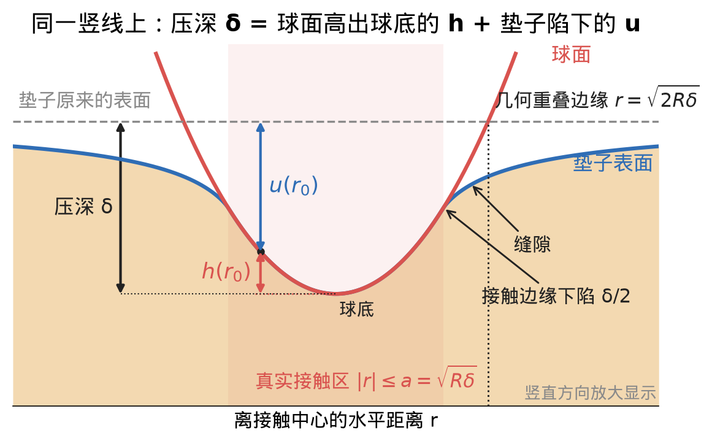
这张图说明：刚球压进弹性垫子时，真正贴住球的区域比两者几何重叠的区域窄。横轴是离接触中心的水平距离，竖直方向放大显示。红线是球面，蓝线是垫子变形后的表面，米色是垫子，灰色虚线是垫子原来的表面；球底比原表面低出压深 \(\delta\)。中间粉色带是真实接触区 \(|r|\le a=\sqrt{R\delta}\)：带内蓝线贴着红线，垫子跟着球面凹下去。到粉色带边缘，垫子已经下陷 \(\delta/2\)，并不是回到原表面才和球分开。再往外，球面要到右侧点线 \(r=\sqrt{2R\delta}\)（几何重叠的边缘）才升回原表面，但这一段蓝线在红线下方，两者之间是缝隙：垫子被接触区带着下陷，却没有碰到球。所以按几何重叠估的接触半径比真实的宽。
推导：Hertz 接触（球面形状 → 接触半径 → 合力 → 弹性能 → 刚度）
以下推导刚球（半径 \(R\)）压弹性半空间（杨氏模量 \(E\)、泊松比 \(\nu\)，即侧向膨胀应变 ÷ 轴向压缩应变）。两个物体都可变形时，两者的下沉相加，结论只需把 \(E^*\)、\(R\) 换成 \(\dfrac{1}{E^*}=\dfrac{1-\nu_1^2}{E_1}+\dfrac{1-\nu_2^2}{E_2}\)、\(\dfrac1R=\dfrac1{R_1}+\dfrac1{R_2}\)。
① 球面形状
已知：球半径 \(R\)、离最低点的水平距离 \(r\)；求：该处球面比最低点高出的 \(h\)。
\[\begin{cases}\color{#c0392b}{r^2+(R-h)^2=R^2} & \color{#c0392b}{(1)}\\[4pt] \color{#c0392b}{h\ll R} & \color{#c0392b}{(2)}\end{cases}\ \color{#c0392b}{\Longrightarrow\ h\approx\frac{r^2}{2R}}\]
式 (1)：勾股定理，球心在最低点正上方 \(R\) 处，球面上每一点到球心的距离都是 \(R\)。
式 (2)：只看最低点附近，接触只发生在球底很小一片，那里高出的量比球半径小得多，平方项可以丢掉。
结果：展开 (1)，按 (2) 略去高阶项。离中心越远 → 高出越多，而且按平方涨（远一倍高出四倍），因为碗底越往外越陡；球越大 → 同样距离高出越少，因为大球的碗底更平。
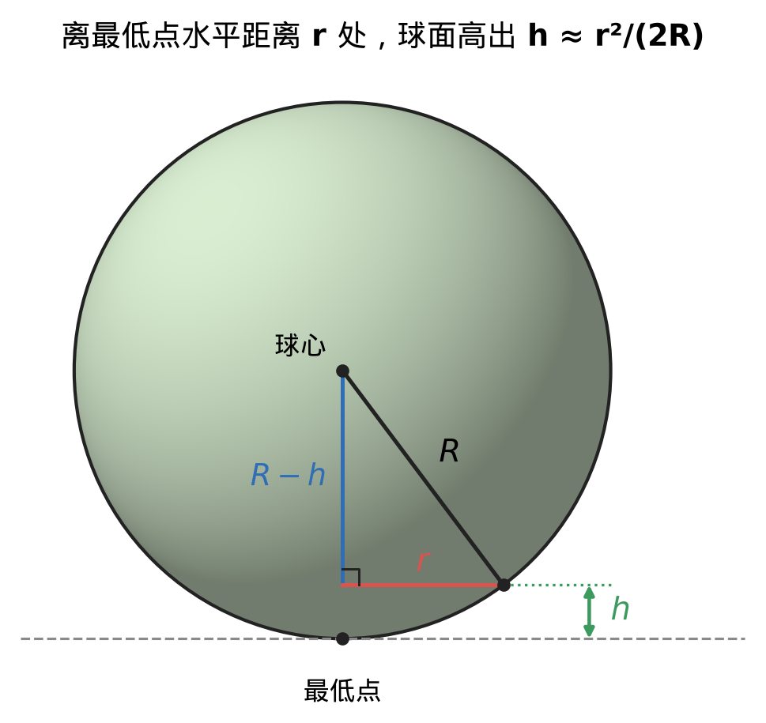
把球竖着剖开，球心到最低点是半径 R。离最低点水平走 r（红线）到球面上一点，这点比最低点高 h（绿色双箭头）。从球心往下画到这一高度是蓝色竖边，长 R − h；它和红色横边 r、黑色斜边 R 围成一个直角三角形，所以 r² + (R − h)² = R²。展开得 2Rh = r² + h²，h 比 R 小得多时略去 h²，就得到 h ≈ r²/(2R)：最低点附近的球面就像一个碗底，离中心越远升得越快。
推导
- 记号：\(E^*=\dfrac{E}{1-\nu^2}\)，它是下面 Boussinesq 点力解中出现的模量组合
- 球面形状
- 球心在最低点正上方 \(R\) 处。离中心水平距离 \(r\) 的球面点比最低点高 \(h\)，由勾股定理 \(r^2+(R-h)^2=R^2\)
- 展开：\(r^2+R^2-2Rh+h^2=R^2\)，即 \(r^2=2Rh-h^2\)
- \(h\ll R\)，\(h^2\) 相对 \(2Rh\) 可忽略：\(r^2\approx2Rh\)，即 \(h\approx\dfrac{r^2}{2R}\)
② 压深与几何重叠
已知：球半径 \(R\)、压深 \(\delta\)（球最低点进入原表面以下的深度）；求：假设垫子不变形时的重叠半径。
\[\begin{cases}\color{#c0392b}{h\approx\dfrac{r^2}{2R}} & \color{#c0392b}{(1)}\\[4pt] \color{#c0392b}{\delta-h(a_{\text{几何}})=0} & \color{#c0392b}{(2)}\end{cases}\ \color{#c0392b}{\Longrightarrow\ a_{\text{几何}}^2=2R\delta}\]
式 (1)：① 的结果，离中心 \(r\) 处的球面比最低点高这么多。
式 (2)：重叠的边缘就是球面正好回到原表面的地方。
结果：假如垫子一点不凹，球插进去的那一圈有多大；压得越深 → 这一圈越大，但只按平方根变大，因为越往外球面越陡、越难再多插进一圈。下面会看到真实接触比这一圈小。
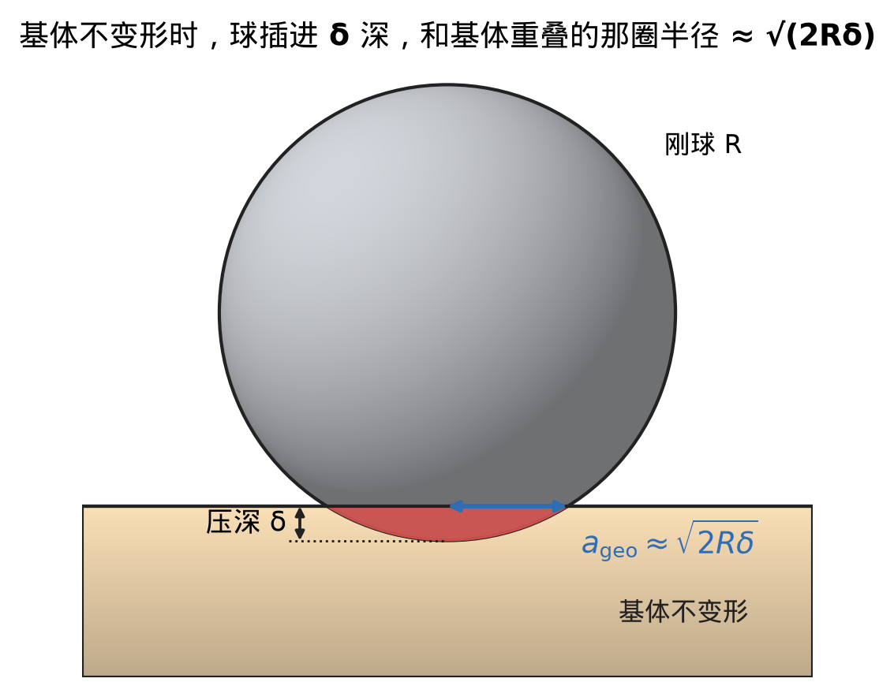
假设基体（米色）完全不变形，刚球（灰）直接往下插进去，最低点比原表面低 δ（左边黑色双箭头）。红色透镜是球和基体重叠的那块。蓝色双箭头从中心沿原表面量到重叠的边缘，这一圈的半径就是 a_geo。由 ① 的碗底公式，r²/(2R) = δ 处正好碰到原表面，所以 a_geo² ≈ 2Rδ。真实接触中基体会被带着往下陷，接触圈比这个小，见 ③。
推导
- 压深 \(\delta\)：球最低点进入基体原表面以下的深度。离中心 \(r\) 处的球面比最低点高 \(\dfrac{r^2}{2R}\)，所以它在原表面以下 \(\delta-\dfrac{r^2}{2R}\)
- 几何重叠（基体不变形）：\(\delta-a^2/(2R)=0\Rightarrow a^2=2R\delta\)
③ 接触半径与中心压强
已知：球半径 \(R\)、压深 \(\delta\)、模量 \(E^*\)；求：真实接触半径 \(a\) 与中心压强 \(p_0\)。
\[\begin{cases}\color{#c0392b}{u=\delta-\dfrac{r^2}{2R}\quad(r\le a)} & \color{#c0392b}{(1)}\\[4pt] \color{#c0392b}{u=\dfrac{P}{\pi E^*s}} & \color{#c0392b}{(2)}\\[4pt] \color{#c0392b}{p=p_0\sqrt{1-t^2/a^2}} & \color{#c0392b}{(3)}\end{cases}\ \color{#c0392b}{\Longrightarrow\ a^2=R\delta,\quad p_0=\frac{2aE^*}{\pi R}}\]
式 (1)：几何贴合。\(u\) 是离中心 \(r\) 处垫子表面往下陷的深度：接触区里垫子表面必须正好贴着球面，球底压下了 \(\delta\)，而球面在 \(r\) 处比球底高出 ① 的 \(h\)，所以垫子在那里陷下 \(\delta-h\)。它不是处处为 0：中心陷得最深（等于 \(\delta\)），越往外陷得越浅；只有到 ② 算的几何重叠边缘（\(\delta=h\)）才降到 0。真实接触圈比那个边缘小（结果里算出接触边缘还陷着 \(\delta/2\)），因为接触区外的垫子也被带着往下陷，球还没碰到那里就已经离开了。
式 (2)：Boussinesq 点力解，按住一点，周围也跟着陷，离得越远 → 陷得越少，与距离成反比；材料越硬 → 陷得越少（下面第二张图）。
式 (3)：Hertz 压强分布，中心最大、到接触边缘降到 0。
结果：把 (3) 按 (2) 叠加出的下沉，令它对接触区内所有点都等于 (1)，得接触半径与中心压强，以及接触边缘下沉为压深的一半。压得越深 → 接触圈越大，球越大 → 接触圈越大；材料越硬、接触圈越大 → 中心压强越大。因为压一点周围都跟着陷，接触边缘的垫子已经被带着陷了一半压深，所以真实接触半径比几何重叠的小（平方比为 1 : 2）。
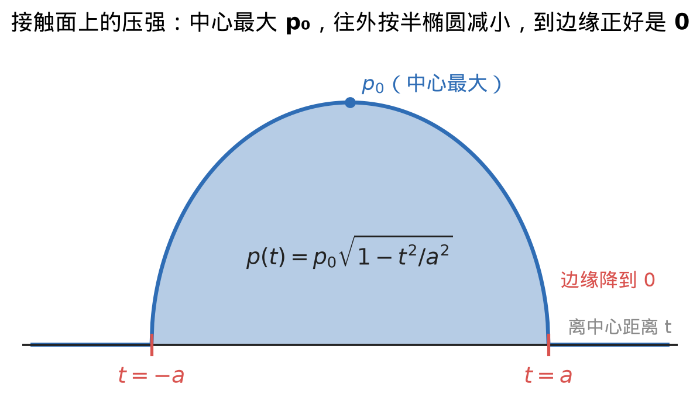
横轴是离接触中心的距离 t，纵轴是那一点的压强。蓝色曲线 p(t) = p₀√(1 − t²/a²) 是半个椭圆：中心 t = 0 最大，等于 p₀（蓝点）；往外逐渐减小，到接触边缘 t = ±a（红色刻度）正好降到 0；圈外不受压。
这张图把核心式放回剖面上看。红线是球面，蓝线是垫子表面，灰色虚线是垫子原来的表面，竖直方向放大显示。在接触区里任取一条竖线 \(r_0\)：从原表面往下量到球底是压深 \(\delta\)，它正好分成两段，下面一段是这一点球面比球底高出的 \(h(r_0)\)，上面一段是垫子在这一点陷下去的 \(u(r_0)\)。同一条竖线上 \(\delta=h+u\)，所以接触区里垫子的下陷就是 \(u=\delta-h\)：离中心越远，球面抬得越高，垫子陷得越少。粉色带是真实接触区 \(|r|\le a=\sqrt{R\delta}\)，到它的边缘垫子仍下陷 \(\delta/2\)；再往外蓝线离开红线，两者之间是缝隙。右侧点线是几何重叠的边缘 \(r=\sqrt{2R\delta}\)，比真实接触区宽，因为垫子被接触区带着一起往下陷。
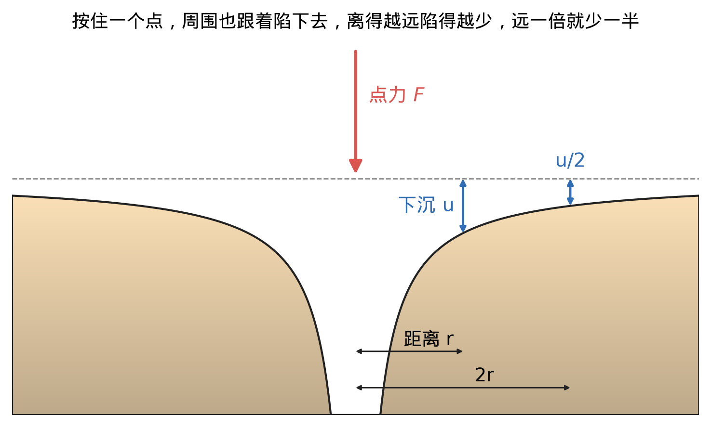
这张图说明 Boussinesq 点力解的核心：在弹性半空间表面按住一个点，周围一圈都跟着陷下去，离得越远陷得越少。红色箭头是作用在一点上的点力 \(F\)；米色是半空间，上方灰色虚线是它原来的表面。距离 \(r\) 处表面下沉 \(u\)（蓝色标注），到距离 \(2r\) 处只下沉 \(u/2\)：下沉和距离成反比，正对应 \(u=P/(\pi E^*s)\) 里的 \(1/s\)。
推导
④ 合力
已知：③ 的接触半径与中心压强；求：合力 \(F\)。
\[\begin{cases}\color{#c0392b}{F=\displaystyle\int_0^a p(t)\,2\pi t\,dt=\tfrac23\pi a^2p_0} & \color{#c0392b}{(1)}\\[4pt] \color{#c0392b}{p_0=\dfrac{2aE^*}{\pi R},\quad a^2=R\delta} & \color{#c0392b}{(2)}\end{cases}\ \color{#c0392b}{\Longrightarrow\ F=\frac43E^*R^{1/2}\delta^{3/2}}\]
式 (1)：压强在接触圆上按圆环加起来，合力等于接触圈面积乘上平均压强，平均压强是中心压强的 2/3。
式 (2)：③ 的结果，接触圈多大、中心压多大。
结果：把 (2) 代入 (1)。压深越大 → 力越大，而且比压深涨得快（1.5 次方），因为每处压得更深，接触圈又同时变宽，两件事叠在一起；球越大 → 力越大，但只按开方涨，因为大球只是接触圈宽一些。
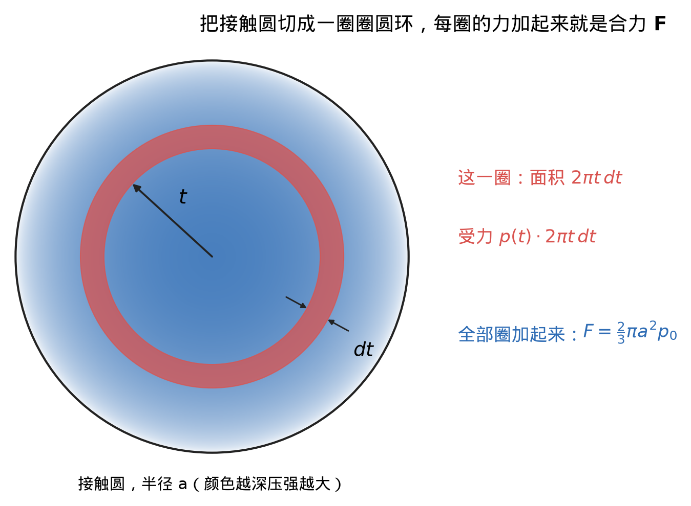
从正上方看接触圆，半径 a，蓝色越深表示压强越大（中心最深，按 ③ 的半椭圆变浅）。把它切成一圈圈细圆环：红色这一圈半径 t（黑箭头）、宽 dt（两个小箭头夹住的宽度），面积是周长乘宽度 2πt·dt，受力是压强乘面积 p(t)·2πt·dt。把从中心到边缘所有圈的力加起来（积分）就是合力 F = (2/3)πa²p₀，再代入 ③ 的 a、p₀ 得 F = (4/3)E*R^{1/2}δ^{3/2}。
推导
-
合力 \(F\)：把压强在接触圆上加起来
-
半径 \(t\) 处、宽 \(dt\) 的一圈圆环，面积为周长 × 宽 \(=2\pi t\,dt\)，受力为 \(p(t)\cdot2\pi t\,dt\)。从中心 \(t=0\) 加到边缘 \(t=a\)：
\[F=\int_0^a p_0\sqrt{1-\frac{t^2}{a^2}}\cdot2\pi t\,dt=2\pi p_0\int_0^a\sqrt{1-\frac{t^2}{a^2}}\;t\,dt\]
-
换元：定义 \(w=1-\dfrac{t^2}{a^2}\)（即根号里的部分）
- 求 \(dw\)：对 \(t\) 求导，\(\dfrac{dw}{dt}=-\dfrac{2t}{a^2}\)，所以 \(dw=-\dfrac{2t}{a^2}dt\)，两边乘 \(-\dfrac{a^2}{2}\) 得 \(t\,dt=-\dfrac{a^2}{2}\,dw\)
- 换积分限：把 \(t=0\) 代入 \(w=1-\dfrac{t^2}{a^2}\)，得 \(w=1-0=1\)；把 \(t=a\) 代入，得 \(w=1-\dfrac{a^2}{a^2}=1-1=0\)。所以 \(t\) 从 0 到 \(a\) 对应 \(w\) 从 1 到 0
- 代入：\(\displaystyle\int_0^a\sqrt{1-\frac{t^2}{a^2}}\;t\,dt=\int_1^0\sqrt w\cdot\Big(-\frac{a^2}{2}\Big)dw\)。上下限对调一次多一个负号，与 \(-\dfrac{a^2}{2}\) 的负号抵消，得 \(\dfrac{a^2}{2}\displaystyle\int_0^1\sqrt w\,dw\)
- 计算：\(\sqrt w=w^{1/2}\) 的原函数为 \(\dfrac{2}{3}w^{3/2}\)，所以 \(\displaystyle\int_0^1 w^{1/2}dw=\frac{2}{3}\cdot1-\frac23\cdot0=\frac23\)。于是 \(\dfrac{a^2}{2}\cdot\dfrac23=\dfrac{a^2}{3}\)
- 代回：\(F=2\pi p_0\cdot\dfrac{a^2}{3}=\dfrac23\pi a^2p_0\)
- 把 \(p_0=\dfrac{2aE^*}{\pi R}\) 代入：\(F=\dfrac23\pi a^2\cdot\dfrac{2aE^*}{\pi R}=\dfrac{4E^*a^3}{3R}\)
-
把 \(a=\sqrt{R\delta}\) 代入：\(a^3=(R\delta)^{3/2}=R^{3/2}\delta^{3/2}\)，所以 \(F=\dfrac{4E^*R^{3/2}\delta^{3/2}}{3R}\)，\(R^{3/2}\div R=R^{1/2}\)：
\[F=\frac{4}{3}E^*R^{1/2}\delta^{3/2}\]
⑤ 弹性能
已知：④ 的力–压深关系；求：弹性能 \(U\)。
\[\begin{cases}\color{#c0392b}{U=\displaystyle\int_0^\delta F\,d\delta'} & \color{#c0392b}{(1)}\\[4pt] \color{#c0392b}{F=\tfrac43E^*R^{1/2}\delta^{3/2}} & \color{#c0392b}{(2)}\end{cases}\ \color{#c0392b}{\Longrightarrow\ U=\frac{8}{15}E^*R^{1/2}\delta^{5/2}}\]
式 (1)：弹性能 = 力从 0 压到当前压深一路做的功，即力–压深曲线下面的面积。
式 (2)：④ 的结果。
结果：把 (2) 代入 (1) 积分。压深越大 → 能量越大，而且比力再多涨一次方（2.5 次方），因为每多压一点，都是在已经很大的力上再做功；在对数坐标里是一条斜率 2.5 的直线，压头越尖斜率越大（下面第二张图）。
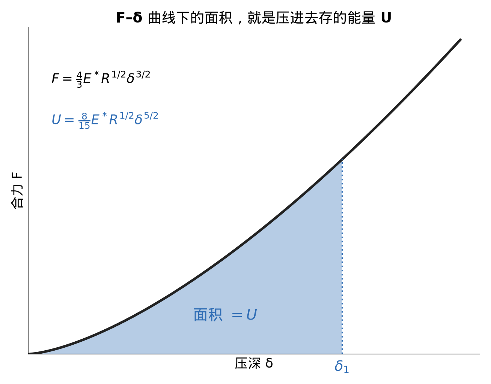
黑色曲线是合力随压深的变化 F = (4/3)E*R^{1/2}δ^{3/2}。从 0 压到 δ₁ 的过程中，每多压 dδ，力做功 F·dδ，就是曲线下一条细竖条的面积；全部竖条加起来，就是蓝色面积，也就是压到 δ₁ 时存进去的弹性能 U = (8/15)E*R^{1/2}δ^{5/2}。指数从 3/2 积分变成 5/2，能量随压深涨得比力更快。
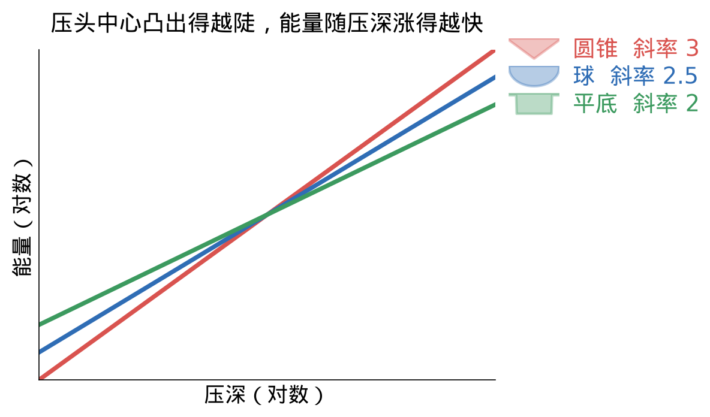
这张图说明能量随压深涨多快由压头形状决定。横轴是压深、纵轴是能量，都取对数，所以按幂次涨的能量画出来是直线，斜率就是幂次。蓝线是球（斜率 2.5，就是这里的 \(U\propto\delta^{5/2}\)），红线是圆锥（斜率 3），绿线是平底（斜率 2）；右上角的小图标是三种压头的样子。压头越尖，接触面积随压深涨得越快，直线越陡。
推导
- 弹性能 \(U\)：力对压深积分（从 0 压到 \(\delta\) 做的功）
-
\(U=\displaystyle\int_0^\delta\frac43E^*R^{1/2}\delta'^{3/2}\,d\delta'\)。\(\delta'^{3/2}\) 的原函数为 \(\dfrac{\delta'^{5/2}}{5/2}=\dfrac25\delta'^{5/2}\)，所以
\[U=\frac43E^*R^{1/2}\cdot\frac25\delta^{5/2}=\frac{8}{15}E^*R^{1/2}\delta^{5/2}\]
⑥ 刚度
已知：④ 的力–压深关系、③ 的接触半径；求：刚度（再压一点力多出多少）。
\[\begin{cases}\color{#c0392b}{F=\tfrac43E^*R^{1/2}\delta^{3/2}} & \color{#c0392b}{(1)}\\[4pt] \color{#c0392b}{a=\sqrt{R\delta}} & \color{#c0392b}{(2)}\end{cases}\ \color{#c0392b}{\Longrightarrow\ \frac{dF}{d\delta}=2E^*a}\]
式 (1)：④ 的结果；刚度就是它对压深的变化率。
式 (2)：③ 的结果。
结果：(1) 对压深求导，用 (2) 写回接触半径。接触圈越大 → 越硬，因为参与受力的面越大；压得越深，接触圈越大，所以越压越硬。
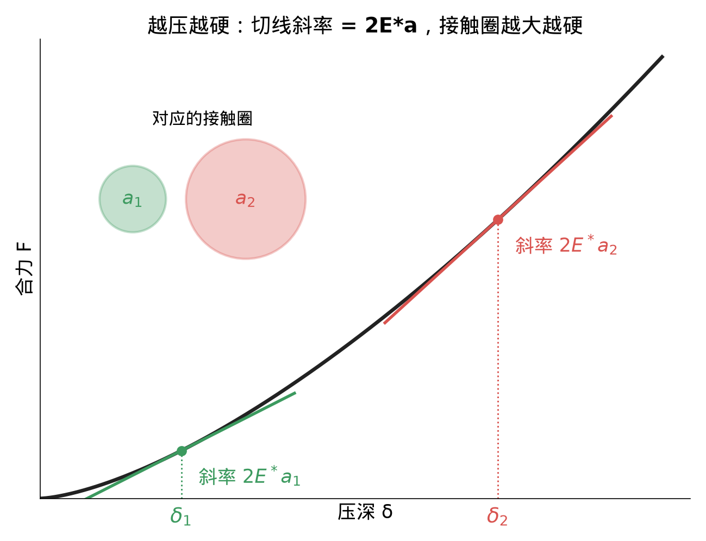
黑色曲线是 F–δ。在浅压深 δ₁（绿）和深压深 δ₂（红）各画一条切线，切线斜率就是此时的刚度 dF/dδ，等于 2E*a。左上两个圆是这两个压深下对应的接触圈，按同一比例画：a₂ 比 a₁ 大，所以红切线比绿切线陡。也就是说接触圈越压越大，物体就越压越硬。
推导
- 刚度随接触半径增大
- 刚度 = \(F\) 对 \(\delta\) 的导数：\(\dfrac{dF}{d\delta}=\dfrac43E^*R^{1/2}\cdot\dfrac32\delta^{1/2}=2E^*R^{1/2}\delta^{1/2}=2E^*\sqrt{R\delta}\)
- 因为 \(a=\sqrt{R\delta}\)，所以 \(\dfrac{dF}{d\delta}=2E^*a\)：刚度正比于接触半径，接触半径随压深增大，所以越压越硬
适用范围
- 线弹性（应力与应变成正比，变形很小）
- \(a\ll R\)
- 厚块：基体远大于接触区，可按半空间（表面为平面、向下无限延伸的弹性体）处理
- 光滑曲面、无摩擦、准静态（只求平衡状态，忽略惯性）
平底压头、多接触区、薄层超出此范围，需使用其他解析解。
结论：\(F\propto\sqrt R\,\delta^{3/2}\)，刚度 ∝ 接触半径。在光滑曲面压厚块的情况下作为裁判。
文献：神经网络接触模型
本节回答三个问题：同类方法学什么、数据从哪来、与本项目的关系。用于说明本项目选择学习能量的理由、可借鉴的做法，以及标签需要自行生成。
共同背景：子空间模型用少量控制量（把手，handle）通过插值驱动全网格，求解快，但做不出局部接触凹陷。三篇 Romero 都在子空间模型上补回接触凹陷，标签构造相同：固定把手 → 求全网格的平衡解 → 减去子空间形状 → 差值为标签。
2.1 Romero et al. 2021：Handle-Based Subspace Contact Corrections
学什么：全网格位移修正
\[\mathbf{x} = \mathbf{U}\mathbf{q} + \mathbf{F}\left[\mathbf{r}_{\text{int}}(\mathbf{q}) + \mathbf{r}_{\text{ext}}(\text{碰撞体相对把手的位姿})\right]\]
\(\mathbf U\mathbf q\)：把手插值形状；\(\mathbf r_{\text{int}}\)：无接触时的插值误差；\(\mathbf r_{\text{ext}}\)：碰撞体压出的凹坑；\(\mathbf F\)：把修正从静止姿态转到当前姿态。
输入 → 输出：两个网络，各自独立
|
内修正网络 \(\mathbf r_{\text{int}}\) |
外修正网络 \(\mathbf r_{\text{ext}}\) |
| 输入 |
把手状态 \(\mathbf q\)：所有点把手的位置、所有坐标架把手的位置和朝向，拼成一个向量（长度 = 把手自由度总数） |
\(\mathbf A(\mathbf q)^{-1}\mathbf z\)：碰撞体在物体坐标架把手局部坐标系下的位置和朝向，定义见表下 |
| 网络 |
2 层全连接，tanh，200 神经元 |
2 层全连接，tanh，200–3000 神经元 |
| 输出 |
15 个 PCA 系数 |
50–120 个 PCA 系数 |
| 解码 |
15 个系数 × 内修正 PCA 基 = 全网格每个顶点的内修正位移 \(\mathbf r_{\text{int}}\) |
50–120 个系数 × 外修正 PCA 基 = 全网格每个顶点的外修正位移 \(\mathbf r_{\text{ext}}\) |
外修正网络的输入 \(\mathbf A(\mathbf q)^{-1}\mathbf z\)：
推导：外修正网络的输入（碰撞体世界位姿 → 相对把手的位姿）
① 刚体变换求逆：世界坐标 → 局部坐标
已知：把手的朝向 \(\mathbf R_A\) 与位置 \(\mathbf t_A\)、某点的世界坐标；求：该点在把手局部坐标系中的坐标。
\[\begin{cases}\color{#c0392b}{\mathbf x_{\text{世界}}=\mathbf R_A\,\mathbf x_{\text{局部}}+\mathbf t_A} & \color{#c0392b}{(1)}\\[4pt] \color{#c0392b}{\mathbf R_A^{T}\mathbf R_A=\mathbf I} & \color{#c0392b}{(2)}\end{cases}\ \color{#c0392b}{\Longrightarrow\ \mathbf x_{\text{局部}}=\mathbf R_A^{T}(\mathbf x_{\text{世界}}-\mathbf t_A)}\]
式 (1)：把手的刚体变换，把物体局部坐标里的一点先按把手朝向转过去，再挪到把手所在位置，就得到它在世界里的位置（论文 §4.1：为把手定义刚体变换 \(\mathbf A(\mathbf q)\) 并求逆）。
式 (2)：旋转矩阵的转置就是它的逆，转回去只要用转置，不用真的解方程。
结果：(1) 两边减去平移，再左乘转置，由 (2) 得局部坐标（即论文 §4.1 式 (7) 中的 \(\mathbf A(\mathbf q)^{-1}\)）。把手挪到哪 → 先减掉哪，把手转了多少 → 再反着转回多少，因为求逆就是把「先转后挪」倒过来做成「先退回再反转」。
推导
- \(\mathbf q\)：把手状态，即所有点把手的位置、所有坐标架把手的位置和朝向拼成的向量
- \(\mathbf A(\mathbf q)\)：由 \(\mathbf q\) 确定的物体坐标架把手的刚体变换，即旋转 \(\mathbf R_A\) 加平移 \(\mathbf t_A\)（把手的朝向和位置）。它把物体局部坐标变成世界坐标：\(\mathbf x_{\text{世界}}=\mathbf R_A\,\mathbf x_{\text{局部}}+\mathbf t_A\)
- \(\mathbf z\)：碰撞体在世界坐标系下的状态，即位置 \(\mathbf p_z\)、朝向 \(\mathbf R_z\)
- \(\mathbf A(\mathbf q)^{-1}\)：反过来把世界坐标变成局部坐标。由 \(\mathbf x_{\text{世界}}=\mathbf R_A\mathbf x_{\text{局部}}+\mathbf t_A\) 两边减 \(\mathbf t_A\) 得 \(\mathbf x_{\text{世界}}-\mathbf t_A=\mathbf R_A\mathbf x_{\text{局部}}\)，再左乘 \(\mathbf R_A^{T}\)（旋转矩阵满足 \(\mathbf R_A^{T}\mathbf R_A=\mathbf I\)）得 \(\mathbf x_{\text{局部}}=\mathbf R_A^{T}(\mathbf x_{\text{世界}}-\mathbf t_A)\)
② 作用到碰撞体上：相对位姿
已知：碰撞体在世界里的位置 \(\mathbf p_z\) 与朝向 \(\mathbf R_z\)、① 的逆变换；求：碰撞体相对把手的位姿，即外修正网络的输入。
\[\begin{cases}\color{#c0392b}{\mathbf z=(\mathbf p_z,\mathbf R_z)} & \color{#c0392b}{(1)}\\[4pt] \color{#c0392b}{\mathbf x_{\text{局部}}=\mathbf R_A^{T}(\mathbf x_{\text{世界}}-\mathbf t_A)} & \color{#c0392b}{(2)}\end{cases}\ \color{#c0392b}{\Longrightarrow\ \mathbf A(\mathbf q)^{-1}\mathbf z=\big(\mathbf R_A^{T}(\mathbf p_z-\mathbf t_A),\ \mathbf R_A^{T}\mathbf R_z\big)}\]
式 (1)：碰撞体在世界里在哪、朝哪（论文 §4.1：\(\mathbf z\) 为交互状态，可含刚性碰撞体的状态与尺寸）。
式 (2)：① 的结果。
结果：位置按 (2) 当作一个点变换；朝向不受平移影响，只需反转（论文 §4.1 式 (7) 的外修正输入；§4.1「For better learning ability」把交互状态写成相对子空间状态）。物体和碰撞体在世界里一起平移或旋转 → 相对位姿不变 → 网络输入不变，因为两者的平移一起变、旋转一起乘，相减、相乘后抵消；所以同一个凹坑只需学一次。
推导
- 作用到 \(\mathbf z\) 上：位置变成 \(\mathbf R_A^{T}(\mathbf p_z-\mathbf t_A)\)，朝向变成 \(\mathbf R_A^{T}\mathbf R_z\)
为什么用相对位姿：凹坑形状只由碰撞体相对物体在哪、怎么转决定。物体和碰撞体在世界中一起平移或旋转时，\(\mathbf A(\mathbf q)^{-1}\mathbf z\) 不变，凹坑也不变；直接输入 \(\mathbf z\) 则网络要在每个世界位置重新学同一个凹坑。输入相对位姿，网络只需学碰撞体相对物体的那部分变化。
- PCA：从训练数据中所有修正位移里提取最主要的若干个变形模式（PCA 基，每个模式是一个"全网格位移场"）。任意修正 ≈ 各模式按系数加权求和，所以网络只输出系数
- 两个输出解码后相加，代入 \(\mathbf x=\mathbf U\mathbf q+\mathbf F(\mathbf r_{\text{int}}+\mathbf r_{\text{ext}})\) 得到全网格位置
- 速度：仿真时只对 \(\mathbf q\) 求解，比全空间 FEM 快 5–9 倍
数据：在子空间中录制碰撞体以不同深度扫过表面，再用精细 FEM（Neo-Hookean 大变形材料，1–1.7 万四面体）重放并取差。每个物体–碰撞体组合单独生成。仅公开果冻–星形数据，无生成代码。
和我们的关系：学位移，没有可求导的能量；每个组合单独训练。
结论：在子空间上叠加学习的位移修正，学的是形状。
2.2 Romero et al. 2022：Contact-Centric Deformation Learning
学什么：在碰撞体坐标系（固定在碰撞体上、随其运动的坐标系）中学习每个点的位移。该坐标系下凹坑随物体姿态变化平滑，少量数据即可泛化。接触力来自人工罚函数：碰撞体 SDF（空间中每点到碰撞体表面的有符号距离，外正内负）为负时，能量按穿入深度的三次方增长。
输入 → 输出：一个网络，逐点调用（网格上每个需要位移的点调用一次）
|
内容 |
个数 |
| 输入 1 |
该点在碰撞体坐标系中的坐标 \(\bar z\) |
3 |
| 输入 2 |
把手状态变换到碰撞体坐标系，再乘该点的蒙皮权重（与该点无关的把手被置零） |
把手自由度总数 |
| 网络 |
全连接 MLP，300 或 500 神经元 |
|
| 输出 |
该点在碰撞体坐标系中的位移 |
3 |
| 输出之后 |
乘碰撞体的旋转 \(\mathbf T\) 转到世界坐标，加到把手带动的位置 \(\tilde x\) 上 |
|
数据：对物体姿态 × 接触位置 × 碰撞体朝向 × 压深均匀采样，精细 FEM 求解后取差。3D 果冻 4.8 万样本、37 小时；鸭子仅用 8 个姿态。仅公开 2D 数据，无仿真与训练代码。
和我们的关系：标签构造与我们相同（固定粗自由度 → 精细解 → 取差）。它存位移、力来自人工罚函数，每个碰撞体单独训练；我们存能量、力由能量求导得到。
结论：在碰撞体坐标系中学习接触位移，少量姿态即可获得实时接触细节。
2.3 Romero et al. 2023：General Collider Descriptors
学什么：以碰撞体局部形状为条件的位移，泛化到训练时未见过的碰撞体。局部形状用 65 个探针描述：以接触点为原点、一根轴沿接触法向建立接触坐标系，在单位球内取 65 个点，读取每点的 SDF 值（到碰撞体表面的有符号距离）。压入越深，负值探针越多。
输入 → 输出：一个网络，逐点调用
|
内容 |
个数 |
| 输入 1 |
该点附近 65 个探针的 SDF 值 |
65 |
| 输入 2 |
把手状态变换到接触坐标系，再乘该点的蒙皮权重（与该点无关的把手被置零） |
把手自由度总数 |
| 网络 |
6 层全连接，各层 150, 150, 150, 150, 50, 10 神经元，ELU 激活 |
|
| 输出 |
该点在接触坐标系中的位移 |
3 |
| 输出之后 |
先乘接触坐标系的旋转 \(R\) 转到碰撞体坐标系，再乘碰撞体的旋转 \(T\) 转到世界坐标，加到把手带动的位置上 |
|
数据：被压物体固定为果冻；52 个刚性碰撞体（30 训练、22 测试）。每个碰撞体按以下步骤生成：
- 子空间状态（5 个）：让果冻与该碰撞体做一段交互式子空间仿真，从中挑出把手状态 \(\mathbf q\) 彼此差别最大的 5 个，即果冻的 5 种整体形状
- 接触构型（每个子空间状态 105 个）：随机取三个量组合，即接触点在果冻表面的位置、碰撞体相对果冻的位姿、压入深度
- 标签：把把手固定在该子空间状态，按该接触构型放置碰撞体，精细 FEM 求平衡，求得的位置减去把手带动的位置
每个碰撞体共 5 × 105 = 525 个构型。公开训练代码与数据，无生成代码。
和我们的关系：泛化方向不同。它固定被压物体、泛化到新碰撞体；我们的目标是覆盖多种被压物体。SDF 探针可借用于编码我们的穿透状态。
结论：以 SDF 探针描述碰撞体局部形状，接触位移可泛化到未见碰撞体。
2.4 Dou et al. 2026：RigidFormer
学什么：刚体运动本身，网络替代整个物理求解器。
输入 → 输出：一个网络，一次处理整个场景
|
内容 |
个数 |
| 输入（每个顶点） |
到最近接触几何的位移向量 3 + 速度 \(\mathbf x_t-\mathbf x_{t-1}\) 3 + 相对参考位置 \(\mathbf x_t-\mathbf x_{\text{ref}}\) 3（\(\mathbf x_{\text{ref}}\)：该顶点在物体参考姿态下的坐标，见表下） + 物理参数（质量、摩擦、恢复系数）3 |
12 |
| 输入规模 |
每场景最多 16 个物体，每物体最多 1200 个顶点 |
|
| 条件输入 |
\([s,s^2]\)：\(s\) 为步长，即调用一次网络前进几帧（训练取 1、5、10 帧），经 FiLM 输入网络，见表下 |
2 |
| 网络 |
PointNet 编码器（把每个物体的点云编码为特征）+ 4 层 Transformer（计算物体之间的作用）+ 锚点预测头，共 1.748 亿参数 |
|
| 输出（每个物体） |
4 个锚点（见表下）的三维加速度 |
12 |
| 输出之后 |
由锚点加速度求出物体的旋转和平移，作用到所有顶点，见表下 |
|
参考位置：每个物体有一份固定的参考网格（物体在参考姿态下的顶点坐标 \(\mathbf x_{\text{ref}}\)）。刚体任一时刻的顶点位置都是参考网格整体旋转 \(\mathbf R\)、平移 \(\mathbf t\) 的结果：\(\mathbf x_t=\mathbf R\,\mathbf x_{\text{ref}}+\mathbf t\)。所以 \(\mathbf x_t-\mathbf x_{\text{ref}}\) 是该顶点相对参考姿态移动了多少，反映物体当前的姿态。
锚点：每个物体从顶点中选 4 个点作为锚点，用最远点采样选取：先任取一个顶点，之后每次选离已选点最远的顶点，直到选够 4 个，使锚点在物体上尽量分散。刚体有 6 个自由度，3 个不共线的点即可确定其姿态；论文对比 3、4、8 个锚点，4 个的位置误差最小。
由锚点加速度得到物体运动：
推导：由锚点加速度得到物体运动（Verlet → Kabsch → 全体顶点）
① Verlet 积分：锚点加速度 → 锚点新位置
已知：锚点在上一帧与当前帧的位置 \(\mathbf q_{t-1}\)、\(\mathbf q_t\)，网络输出的锚点加速度 \(\mathbf a_t\)，帧间隔 \(\Delta t\)；求：锚点新位置。
\[\begin{cases}\color{#c0392b}{\mathbf v_t=\dfrac{\mathbf q_t-\mathbf q_{t-1}}{\Delta t}} & \color{#c0392b}{(1)}\\[4pt] \color{#c0392b}{\mathbf a_t=\dfrac{\mathbf q_{t+1}-2\mathbf q_t+\mathbf q_{t-1}}{\Delta t^2}} & \color{#c0392b}{(2)}\end{cases}\ \color{#c0392b}{\Longrightarrow\ \hat{\mathbf q}_{t+1}=\mathbf a_t\,\Delta t^2+2\mathbf q_t-\mathbf q_{t-1}}\]
式 (1)：速度 = 相邻两帧位置差 ÷ 帧间隔，只看两帧就知道物体走得多快（论文 §3.1 把相邻两帧位置差当作离散速度输入）。
式 (2)：加速度 = 相邻两段速度之差 ÷ 帧间隔（论文附录 C.2 式 (11)，用同一 Verlet 离散从真实轨迹算加速度标签）。
结果：把 (2) 移项（网络输出锚点加速度见 §3.2，附录 G 表「followed by Verlet + Kabsch」）。网络给的加速度越大 → 新位置偏离「按原速度直走」越远，因为当前位置加上一步的位移就是匀速外推的位置，加速度项是在它上面加的修正；步长越大，同样的加速度修正得越多（按步长的平方涨）。
推导
② Kabsch 对齐：4 个预测锚点 → 一个刚体变换
已知：① 给出的 4 个预测锚点 \(\hat{\mathbf q}_{t+1}^{k}\)、参考姿态下的 4 个锚点 \(\mathbf q_{\text{ref}}^{k}\)；求：一个刚体变换 \((\mathbf R,\mathbf t)\)。
\[\begin{cases}\color{#c0392b}{\mathbf H=\displaystyle\sum_k(\mathbf q_{\text{ref}}^{k}-\bar{\mathbf q}_{\text{ref}})(\hat{\mathbf q}_{t+1}^{k}-\bar{\hat{\mathbf q}})^T,\quad \mathbf U,\boldsymbol\Sigma,\mathbf V^T=\mathrm{SVD}(\mathbf H)} & \color{#c0392b}{(1)}\\[4pt] \color{#c0392b}{\mathbf R=\mathbf V\,\mathrm{diag}(1,1,\det(\mathbf V\mathbf U^T))\,\mathbf U^T} & \color{#c0392b}{(2)}\\[4pt] \color{#c0392b}{\mathbf t=\bar{\hat{\mathbf q}}-\mathbf R\,\bar{\mathbf q}_{\text{ref}}} & \color{#c0392b}{(3)}\end{cases}\ \color{#c0392b}{\Longrightarrow\ (\mathbf R,\mathbf t)=\arg\min_{\mathbf R,\mathbf t}\sum_k\big\|\mathbf R\,\mathbf q_{\text{ref}}^{k}+\mathbf t-\hat{\mathbf q}_{t+1}^{k}\big\|^2}\]
式 (1)：两组锚点各自减去形心后的相关矩阵，再做奇异值分解；网络对每个锚点各自预测，彼此间距不一定保持（论文 §3.2，每个物体 4 个 FPS 锚点）。
式 (2)：旋转，中间的行列式项保证得到的是旋转而不是镜像（论文 §3.2「Differentiable Rigid Projection」，引 Kabsch 1976）。
式 (3)：平移，把参考形心转过去后对齐到预测形心（论文 §3.2）。
结果：找一个只转不变形的摆放，让参考锚点尽量贴近预测锚点。预测锚点越不像刚体（间距偏差越大）→ 对齐后被「掰回」的量越大，因为结果只能是刚体运动，多出来的变形被丢掉。
推导
- 网络各自预测的 4 个新位置不一定保持刚体的相对距离。Kabsch 算法求一组旋转 \(\mathbf R\) 与平移 \(\mathbf t\)，使参考姿态下的 4 个锚点 \(\mathbf q_{\text{ref}}^{k}\) 经变换后与 \(\hat{\mathbf q}_{t+1}^{k}\) 的距离平方和最小
③ 推到所有顶点
已知：② 的 \((\mathbf R,\mathbf t)\)、每个顶点的参考位置 \(\mathbf x_{\text{ref}}\)；求：所有顶点的新位置。
\[\color{#c0392b}{\mathbf x_{t+1}=\mathbf R\,\mathbf x_{\text{ref}}+\mathbf t\quad(\text{所有顶点})}\]
式：整个物体这一步怎么转、怎么挪，作用在参考姿态的形状上，参考为序列第一帧（论文 §3.1；§3.2 对所有顶点广播同一变换，「enforces rigidity by construction」）。
结果：无论物体有多少顶点，都只由 4 个锚点决定，物体严格保持刚性，因为所有顶点用的是同一个旋转和平移。
推导
- 所有顶点：\(\mathbf x_{t+1}=\mathbf R\,\mathbf x_{\text{ref}}+\mathbf t\)，物体严格保持刚性
步长输入方式 FiLM（Feature-wise Linear Modulation，逐特征线性调制）：
推导：步长输入方式 FiLM（步长 → 缩放与偏移 → 调制每维特征）
① 用步长调制特征
已知：每个物体的 768 维特征 \(h\)、步长 \(s\)；求：被步长调制后的特征。
\[\begin{cases}\color{#c0392b}{h_i\leftarrow\gamma_i\,h_i+\beta_i} & \color{#c0392b}{(1)}\\[4pt] \color{#c0392b}{(\gamma,\beta)\ \text{由时间码}\ [s,s^2]\ \text{生成}} & \color{#c0392b}{(2)}\end{cases}\ \color{#c0392b}{\Longrightarrow\ h_i\leftarrow\gamma_i(s)\,h_i+\beta_i(s)}\]
式 (1)：FiLM 的定义，每一维特征先乘一个系数、再加一个偏移，由条件决定乘多少、加多少（Perez et al. 2018，论文引文 [28]；论文附录 I.2 写作 \(\mathrm{FiLM}_{\text{step}}(\mathbf h;[s,s^2])\)）。
式 (2)：步长只以 \(s\) 和 \(s^2\) 两个数进入网络（论文附录 G 表：Time step、per-layer FiLM conditioning；对象嵌入与隐层维度 768）。
结果：同一个网络按不同 \(s\) 输出不同步长的预测（论文附录 C.1：训练时步长在 1、5、10 中随机取，同一个 FiLM 条件化的模型见过长短两种离散；§4.1 Step Sizes 与表 4）：\(s\) 不同 → \(\gamma,\beta\) 不同 → 同一场景得到不同步长的一步；步长越大 → 走完同样时长要滚动预测的次数越少、误差累积越少，所以论文表 4 中步长 10 的 100 帧误差最低（§4.1 Step Sizes）。调制系数只由 \(s\) 决定、对所有物体相同，因为 FiLM 参数在物体间共享（附录 B，不破坏物体顺序等变性）。
推导
- 网络每层中每个物体的特征是一个 768 维向量 \(h=(h_1,\dots,h_{768})\)
- 每个 FiLM 是一个独立的两层 MLP（编码器输出处一个、解码器每层各一个），以 \([s,s^2]\) 为输入，输出两个 768 维向量：缩放 \(\gamma=(\gamma_1,\dots,\gamma_{768})\)、偏移 \(\beta=(\beta_1,\dots,\beta_{768})\)；MLP 最后一层零初始化，所以训练开始时调制是恒等（论文 §3.1「layer-specific MLPs \(\gamma_\ell\), \(\beta_\ell\)」；附录 I.2「Each FiLM module is a two-layer MLP whose final affine layer is zero-initialized」；官方代码 github.com/Frank-ZY-Dou/Dynamics-Modeling/tree/main/RigidFormer 的 src/models/encoder.py L691 写成 \((1+\gamma)h+\beta\)，即同一调制把 \(\gamma\) 平移 1）
- 每一维特征改为 \(h_i\leftarrow\gamma_i\,h_i+\beta_i\)
- \(\gamma,\beta\) 只由 \([s,s^2]\) 决定，同一步内所有物体用同一组
- 作用位置：编码器输出处一次；之后每层 Transformer 内，注意力（含与 register token 的交叉注意力）之后、逐物体全连接层之前各一次。所以每层的注意力结果都被步长调制（论文附录 I.2「Both FiLMs are injected (i) once on the encoder output and (ii) per decoder layer, after the self/cross-attention sublayers and before the FFN」）
- 同一个网络取不同 \(s\)，即输出对应步长的预测
数据：MOVi 数据集（PyBullet 刚体仿真），1200 个场景，每个 3–10 个物体抛落互撞，2 s、480 帧。分三个子集：MOVi-Sphere（只有球）、MOVi-A（基本几何体）、MOVi-B（复杂形状）。RigidFormer 官方代码已公开（github.com/Frank-ZY-Dou/Dynamics-Modeling 的 RigidFormer 目录，项目页 people.csail.mit.edu/frankzydou/projects/RigidFormer 有链接）；数据生成脚本在 HopNet（此前最强的学习型刚体仿真方法，基于网格）的仓库。
跨数据集测试：在一个子集上训练、另一个子集上测试，共 6 种组合；比较预测 100 帧后物体质心的位置误差（均方根，m），两者均为每次前进 1 帧：
| 训练 → 测试 |
HopNet |
RigidFormer |
误差更小 |
| Sphere → A |
0.197 |
0.183 |
RigidFormer |
| Sphere → B |
0.188 |
0.161 |
RigidFormer |
| A → Sphere |
0.172 |
0.153 |
RigidFormer |
| A → B |
0.202 |
0.208 |
HopNet |
| B → Sphere |
0.160 |
0.207 |
HopNet |
| B → A |
0.202 |
0.234 |
HopNet |
加粗行为 RigidFormer 误差更大的 3 组，其中 2 组是在 MOVi-B 上训练。
和我们的关系：没有局部形变，也没有可加入仿真的能量项；换到未训练过的数据集时，6 组中 3 组不如 HopNet。我们保留粗模型仿真，只学一项能量。
结论：从点云学习刚体运动，替代整个求解器。
2.5 对比
|
学习对象 |
输入 |
输出 |
接触力来源 |
泛化 |
| Romero 2021 |
位移 |
内：把手状态；外：碰撞体相对位姿 |
内 15 / 外 50–120 个 PCA 系数 → 全网格位移 |
不由网络给出 |
无 |
| Romero 2022 |
位移 |
点坐标 3 + 加权把手状态（逐点） |
该点位移 3 |
人工罚函数 |
物体姿态 |
| Romero 2023 |
位移 |
65 个 SDF 值 + 加权把手状态（逐点） |
该点位移 3 |
人工罚函数 |
新碰撞体 |
| RigidFormer |
刚体运动 |
每顶点 12 维特征（全场景） |
每物体 4 锚点 × 3 = 12 |
网络直接给运动 |
新场景 |
| 本项目 |
能量 |
每区 20×20 = 400 个高度 + \(\log\delta\) 1 个 |
每区 1 个能量，求和得 \(U_c\) |
能量求导 |
目标：多种被压物体 |
结论：前三篇学位移，RigidFormer 学运动，本项目学能量；能量求导即接触力，可直接接入现有仿真器。三篇 Romero 均未公开数据生成代码，本项目标签需自行生成。
原代码：碰撞能量 U_c
3.1 思路
\[U_c(z)=\min_w \Pi(\Phi z+\Psi w)-\Pi(\Phi z)\]
- \(z\)：粗自由度；\(\Phi z\)：粗模型形状，与对方重叠
- \(\Psi w\)：接触区附近的局部修正变形（\(\Psi\) 为局部变形基，\(w\) 为系数）
- 固定 \(z\)，在不穿透约束下求 \(w\) 使总势能 \(\Pi\)（弹性能 + 重力势能）最小
- \(U_c\) 为该局部变形引起的能量增量，作为势垒加入粗模型：粗模型不强制不穿透，穿透越深 \(U_c\) 越大。势能对坐标的负梯度即力，所以接触力 \(=-\partial U_c/\partial z\)
光滑球压厚块时 \(U_c\) 即 Hertz 弹性能 \(U_{\text{Hertz}}=\dfrac{8}{15}E^*R^{1/2}\delta^{5/2}\)（1.4 第 6 步）。网络学习一般形状下的 \(U_c\)。
设计考虑
推导：重力不进入 \(U_c\)（重力项之差 → 质量加权拟合 → 重力项为 0）
① 重力项之差
已知：粗形状 \(\Phi z\)、局部修正 \(\Psi w\)、节点质量 \(m_i\)、重力加速度 \(g\)；求：加修正前后重力势能之差。
\[\begin{cases}\color{#c0392b}{U_c(z)=\min_w\Pi(\Phi z+\Psi w)-\Pi(\Phi z)} & \color{#c0392b}{(1)}\\[4pt] \color{#c0392b}{E_{\text{重}}=\sum_i m_i\,g\,y_i} & \color{#c0392b}{(2)}\end{cases}\ \color{#c0392b}{\Longrightarrow\ E_{\text{重}}(\Phi z+\Psi w)-E_{\text{重}}(\Phi z)=g\sum_i m_i(\Psi w)_{y,i}}\]
式 (1)：\(U_c\) 是加上局部修正前后总势能之差，总势能含重力势能（本节开头的定义；原代码 nipc/validation/gravity_projection_check.py:94-96 的 total 把弹性能、接触能与 g * (m * X[:, 1]).sum() 相加后对修正量最小化）。
式 (2)：每个节点的重力势能只看它有多高，高度加一点，势能就按固定比例加一点（同一行代码 g * (m * X[:, 1]).sum()）。
结果：(2) 对位置线性，两者相减只剩修正量那部分。修正把质量往下挪得越多 → 重力项越负，因为线性函数之差只和挪动量有关、和粗形状无关。
推导
- 重力势能 \(\sum_i m_i g\,y_i\) 对位置线性，代入定义后重力项之差为 \(g\sum_i m_i(\Psi w)_{y,i}\)
② 质量加权拟合：局部修正不移动质心
已知：全网格节点位置 \(\mathbf x_i\) 与质量 \(m_i\)；求：局部修正的质量加权和。
\[\begin{cases}\color{#c0392b}{\mathbf t=\displaystyle\sum_i \frac{m_i}{\sum_j m_j}\,\mathbf x_i} & \color{#c0392b}{(1)}\\[4pt] \color{#c0392b}{\Psi w=\mathbf x-\text{质量加权仿射拟合}(\mathbf x)} & \color{#c0392b}{(2)}\end{cases}\ \color{#c0392b}{\Longrightarrow\ \sum_i m_i(\Psi w)_i=0}\]
式 (1)：粗状态取全网格位置按节点质量加权的仿射拟合，它的平移部分就是质心的位置（原代码 `gravity_projection_check.py:68-78` 的 `AffineSplit`：权重 `w = mvert / sum`、`fit` 中 `t = (w * X).sum(0)`；调用处 `:123` 用节点质量 `mvert`）。
式 (2)：修正 = 位置减去它自己的质量加权仿射拟合，修正里任何整体平移的成分都被先拿走、交给粗模型（`gravity_projection_check.py:83-86` 的 `project_t`：先减加权平均 `s`，再减以加权质心为原点的线性部分，二者加权平均都为 0）。
结果：局部修正只在质心附近来回挪，质心一点不动。粗模型能表示的整体运动越完整（含平移的刚体、仿射体）→ 修正里剩下的越只是局部凹陷，因为所有能被拟合的部分都已归入粗形状。
推导
- 条件：粗模型含整体平移自由度（刚体、仿射体等），且粗状态 \(z\) 取全网格位置按节点质量加权的拟合。此时质心平移全部归入 \(\Phi z\)，局部修正不移动质心：\(\sum_i m_i(\Psi w)_i=0\)
③ 重力项恒为 0
已知：① 与 ② 的结果；求：重力对 \(U_c\) 的影响。
\[\begin{cases}\color{#c0392b}{\Delta E_{\text{重}}=g\sum_i m_i(\Psi w)_{y,i}} & \color{#c0392b}{(1)}\\[4pt] \color{#c0392b}{\sum_i m_i(\Psi w)_i=0} & \color{#c0392b}{(2)}\end{cases}\ \color{#c0392b}{\Longrightarrow\ \Delta E_{\text{重}}=0,\quad U_c\ \text{与}\ g\ \text{无关}}\]
式 (1)：① 的结果，加修正前后的重力势能之差。
式 (2)：② 的结果，取竖直分量即 (1) 中的求和（原代码 `gravity_projection_check.py:108` 记录这一量 `mass_moment` 以核对）。
结果：重力项恒为 0，\(U_c\) 和最优修正都与 \(g\) 无关；所以生成标签时可以关掉重力（原代码 `nipc/teacher/gen3d_press.py:94` 设 `cfg["gravity"] = [[0.0], [0.0], [0.0]]`），重力由粗模型通过质心承担。重力再大 → \(U_c\) 也不变，因为重力在修正方向上做功为 0。
推导
- 所以重力项恒为 0，\(U_c\) 与 \(g\) 无关；重力由粗模型通过质心承担，标签可关闭重力生成
- 底部固定的物体也不例外：真实物体一端固定，它的粗模型代理并不需要固定那一端。代理允许穿透，完整代表精细解里的仿射变化（包括压缩后质心的整体下移），只是不含局部变形。所以粗状态仍取精细解按节点质量加权的拟合，局部修正不移动质心，重力项同样为 0
- \(U_c\) 与粗模型绑定：粗模型自身能表示的变形越多，剩给 \(U_c\) 的越少。刚体粗模型不存弹性能，全部变形能都在 \(U_c\) 中；仿射体粗模型可整体均匀压缩，这部分由粗模型自身承担。由上一条，重力项为 0，\(U_c\) 只剩弹性能之差：\(U_c^{\text{仿射}}=E_{\text{总}}-\psi(\bar{\mathbf F})V_0\)（\(E_{\text{总}}\)：精细解的总弹性能；\(\bar{\mathbf F}\)：全物体平均变形梯度，即变形后对变形前位置的导数的体积平均；\(\psi\)：单位体积弹性能；\(V_0\)：体积）。为刚体训练的 \(U_c\) 直接用于仿射体，会把整体压缩能量重复计算
3.2 训练数据
刚性压头压弹性半空间（表面为平面、向下无限延伸的弹性体），\(E^*=1\)（等效模量 \(E^*=E/(1-\nu^2)\) 取 1，即无量纲化）。
压头形状（基体原表面为 \(z=0\)，压头在曲面上方）：
\[z_{\text{压头}}(x,y)=a_h+\min_k z_k(x,y)+t_y\,x-t_x\,y\]
压深扫描：同一形状取 \(d=0.003、0.006、0.009、0.012\) 四个压深，各算一个标签。同一形状只有一个压深时，网络无法分辨能量变化来自形状还是压深，会记住样本；扫描压深使网络看到每个形状的能量–压深曲线。
划分：520 组形状 × 4 个压深 = 2080 个样本；按形状留出 1/4 测试，测试形状未在训练中出现。
3.3 标签：BEM
BEM（边界元法）：只在基体表面划网格，内部变形由半空间解析解给出。对 3.2 的每个样本求弹性能作为标签。
网格：原表面 \(z=0\) 上间距 \(h=0.008\) 的方格，取 \(r\le0.18\) 的圆盘（覆盖所有可能接触处），共 1597 格；每格压强取常数 \(p_j\)。网格建在变形前的表面上：线弹性小变形下，表面点的水平移动和表面倾斜忽略不计。
推导：BEM 标签（下沉与压强 → 求压强 → 弹性能）
① 下沉与压强：柔度矩阵
已知：表面方格网（间距 \(h\)）、各格压强 \(p_j\)、模量 \(E^*\)；求：各格下沉 \(u_i\)。
\[\begin{cases}\color{#c0392b}{u=\dfrac{P}{\pi E^*s}} & \color{#c0392b}{(1)}\\[4pt] \color{#c0392b}{C_{ij}=\displaystyle\int_{\text{第 }j\text{ 格}}\frac{dA}{\pi E^*s_i}} & \color{#c0392b}{(2)}\\[4pt] \color{#c0392b}{u_i=\displaystyle\sum_j C_{ij}\,p_j} & \color{#c0392b}{(3)}\end{cases}\ \color{#c0392b}{\Longrightarrow\ u=C\,p}\]
式 (1)：Boussinesq 点力解，按住一点，周围都跟着陷，离得越远陷得越少（1.4 ③）。
式 (2)：把点力解在一个 \(h\times h\) 方格上积分，得「一格单位均匀压强在另一格中心产生的下沉」，\(s_i\) 为到第 \(i\) 格中心的距离（原代码 nipc/analytic/hertz_contact.py:46-57 的 love_coeff：矩形均布压强的闭式下沉，最后除以 \(\pi E^*\)；:71-75 的 build_compliance 对所有格两两求出 \(C_{ij}\)；格点由 :60-68 的 build_nodes 取 \(r\le r_{\max}\) 的方格，\(h=0.008\)、\(r_{\max}=0.18\) 时实算 1597 格，取值见 nipc/learning/neuralipc_nodefit_gen.py:5）。
式 (3)：各格压强的贡献相加。
结果：写成矩阵即得。某格压强越大 → 所有格都陷得越多，离它越近的格陷得越多，因为 \(C_{ij}\) 大约与两格距离成反比；\(E^*\) 越大 → \(C\) 越小，同样压强陷得越少。
推导
② 求压强：带非负约束的二次最小化，用有效集法解
已知：① 的柔度矩阵 \(C\)、各格压头压入量 \(w_i\)；求：各格压强 \(p\)。
\[\begin{cases}\color{#c0392b}{u=C\,p} & \color{#c0392b}{(1)}\\[4pt] \color{#c0392b}{w=\delta-(z-z_0)\quad\big(\text{球压头 } w=\delta-\tfrac{r^2}{2R}\big)} & \color{#c0392b}{(2)}\\[4pt] \color{#c0392b}{p_i\ge0,\quad u_i\ge w_i,\quad p_i>0\Rightarrow u_i=w_i} & \color{#c0392b}{(3)}\end{cases}\ \color{#c0392b}{\Longrightarrow\ \min_{p\ge0}\ \tfrac12 p^TCp - p^Tw}\]
式 (1)：① 的结果。
式 (2)：压头压入量，每一格要么被压头压到、要么离压头还有缝（原代码 `neuralipc_nodefit_gen.py:33` 一般压头；`hertz_contact.py:117` 球压头）。
式 (3)：三个接触条件——只推不拉、不穿透、有压强处必贴合，压强只出现在真正贴住压头的格上。
结果：(3) 正是右边带非负约束的二次最小化的最优条件，按有效集法求解（原代码 `hertz_contact.py:81-105` 的 `solve_signorini`：`:83` 初值取压入量为正的格；`:90` 在当前集合上解线性方程组；`:92-95` 压强为负的格移出；`:99-103` 集合外穿进压头的格加入；两项都通过即停）。压得越深（\(w\) 越大）→ 接触格越多、压强越大，因为更多格的不穿透条件被顶住；接触区外的格压强为 0，却被相邻压强带着下陷。
推导
-
求压强
- 不穿透：表面点 \(i\) 下沉后高度 \(-u_i\) 不能高于压头 \(z_{\text{压头}}(x_i,y_i)\)，即 \(u_i\ge w_i\)，\(w_i=-z_{\text{压头}}(x_i,y_i)\)（压头压入处 \(w_i>0\)）
- 接触条件：\(p_i\ge0\)（只推不拉）；\(u_i\ge w_i\)（不穿透）；\(p_i>0\) 处 \(u_i=w_i\)（有压强必贴合）
-
三条等价于
\[\min_{p\ge0}\ \tfrac12 p^TCp - p^Tw\]
对 \(p_i\) 求导为 \((Cp)_i-w_i\)，由 \(u=Cp\)，\((Cp)_i=u_i\)，即导数为 \(u_i-w_i\)。\(p_i>0\) 处最小值要求导数为 0，即 \(u_i=w_i\)；\(p_i=0\) 处在边界上，导数 \(\ge0\)，即 \(u_i\ge w_i\)。例：一格、\(C=c=2\)。\(w=0.3\) 时最小值在 \(p=0.15\)，\(u=0.3\)，贴合；\(w=-0.2\) 时无约束最小值在 \(p=-0.1<0\)，取 \(p=0\)，\(u=0\)，留缝
-
哪些格接触由求解给出；\(p_i=0\) 的格可被相邻压强带着下沉，即接触区外表面的下陷
- 求解（有效集法）：接触格事先未知，先猜再修正
- 猜哪些格接触，把这些格的编号放进集合 \(A\)（如 \(A=\{3,7,9\}\) 表示猜第 3、7、9 格接触）。初值取压头压入的格（\(w_i>0\)）
- 属于 \(A\) 的格要求贴合 \(u_i=w_i\)，不属于 \(A\) 的格压强为 0。于是属于 \(A\) 的每格，下沉只来自属于 \(A\) 的各格的压强：\(u_i=\sum_{j\in A}C_{ij}p_j=w_i\)，\(i\in A\)。这是一个线性方程组，记作 \(C_{AA}p_A=w_A\)（\(C_{AA}\)：从 \(C\) 中取出编号属于 \(A\) 的行与列，如 \(A=\{3,7,9\}\) 时是第 3、7、9 行与第 3、7、9 列交叉处的 \(3\times3\) 矩阵；\(p_A\)、\(w_A\) 同理取第 3、7、9 个分量），解出这些格的压强
- 若有格压强为负（需要拉），说明它其实不接触，移出 \(A\)，回到第 2 步
- 用解出的压强算所有格的下沉 \(u=Cp\)；若不属于 \(A\) 的格中有 \(u_i<w_i\)（穿进压头），说明它其实接触，加入 \(A\)，回到第 2 步
- 两项检查都通过时，三个接触条件全部满足，即为解
③ 弹性能：标签
已知：② 解出的压强 \(p\)、① 的柔度矩阵 \(C\)、格距 \(h\)；求：弹性能标签 \(U\)。
\[\begin{cases}\color{#c0392b}{U=\displaystyle\sum_i\tfrac12\,(p_ih^2)\,u_i} & \color{#c0392b}{(1)}\\[4pt] \color{#c0392b}{u=C\,p} & \color{#c0392b}{(2)}\end{cases}\ \color{#c0392b}{\Longrightarrow\ U=\tfrac12h^2\,p^TCp}\]
式 (1)：线弹性下做功 = ½ × 力 × 位移，第 \(i\) 格的力是压强乘格面积；力从 0 线性涨到终值，平均只有一半在做功。
式 (2)：① 的结果。
结果：把 (2) 代入 (1)（原代码 `hertz_contact.py:119-122` 的 `0.5 * np.sum(p * u) * cell`，`cell = h*h`；标签生成同式，如 `neuralipc_nodefit_gen.py:36`）。压得越深 → 压强和下沉都更大 → 标签能量增长得比压深快，因为能量是两者之积。
推导
-
弹性能：线弹性下做功为 \(\tfrac12\times\)力\(\times\)位移，第 \(i\) 格力 \(p_ih^2\)：
\[U=\tfrac12\sum_i p_ih^2u_i=\tfrac12h^2\,p^TCp\]
\(U\) 为标签
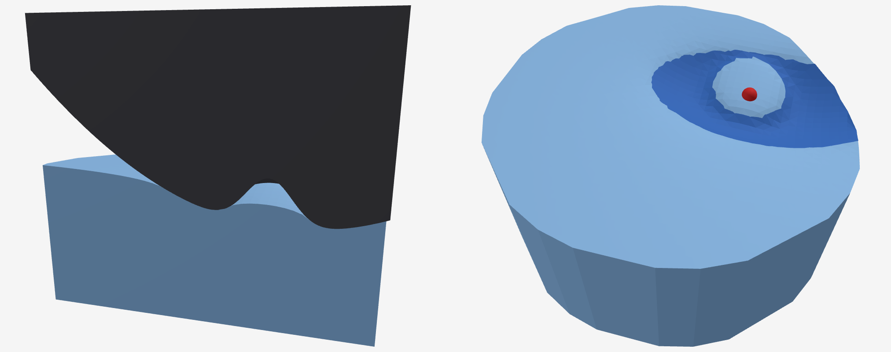
这张图是下面第 1 组训练样本的场景：一个下表面带 1 个凸起的刚性压头（深灰）压在弹性半空间（浅蓝）上，竖直方向放大 4 倍。左幅沿样本图里的白色虚线（过凸起中心）剖开，只留后一半，斜着看剖面：凸起往下压进半空间，半空间表面被压出一个坑贴住它；压头往外越来越高，只画到原表面以上 0.03。右幅把压头拿开，从斜上方看整片半空间：深蓝是精细解里压强大于 0 的接触区，红点是凸起中心（最低点）。这一组的接触区是围着凸起中心的一圈，中心那一小块没有接触，因为凸起上的凹坑让那里的压头表面抬高了，和样本图里凸起中心的暗斑是同一回事。
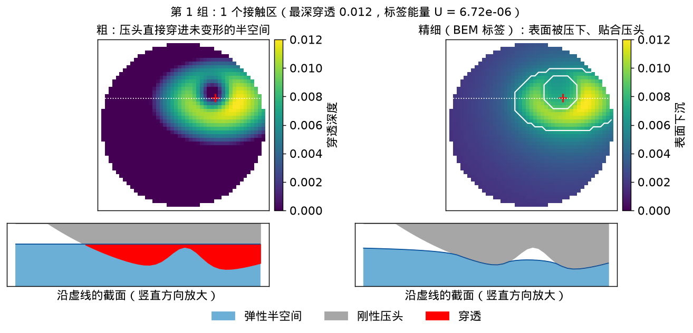
这张图展示一个训练样本由什么组成：输入是粗状态下的穿透，标签是精细解的弹性能。这是第 1 组，压头下表面有 1 个凸起（红色「+」是凸起中心（最低点），对应上面场景图里的红点），压到最深穿透 0.012，半空间 \(E^*=1\)。左格是粗状态：压头和半空间都不变形，压头直接穿进去，颜色是每点的穿透深度（0 到 0.012）；凸起中心的暗斑是凸起上的凹坑让压头表面抬高了，那里没有穿透。右格是 BEM 精细解：半空间表面被压下、贴住压头，颜色是表面下沉量，白线围出压强大于 0 的接触区。两格对比可以看到，精细解里接触区外的表面也被带着下沉，整片圆盘都有颜色，而粗状态只有穿透处有颜色。每格下方是沿白色虚线（过最深凸起的中心）的截面，竖直方向放大：蓝色是半空间，灰色是刚性压头，红色是穿透部分。粗状态截面里红色就是两者重叠；精细解截面里没有红色，半空间表面弯下去贴着压头（最大残余穿透约 \(10^{-17}\)）。标题里的 \(U=6.72\times10^{-6}\) 是精细解的弹性能，也就是网络要学的标签。
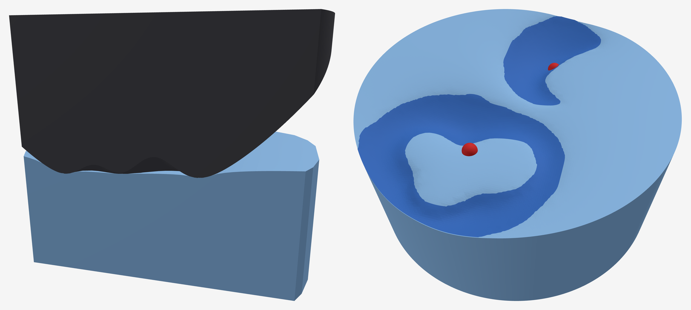
第 2 组的场景，画法同上：压头下表面有 2 个凸起。左幅剖面过较深的那个凸起，可以看到压头底面起伏，有几处同时压在半空间上。右幅两块深蓝接触区各围着一个红点：靠近中间的凸起接触区是一圈，中心同样因凹坑没有接触；远处的凸起接触区是一块弯月形。
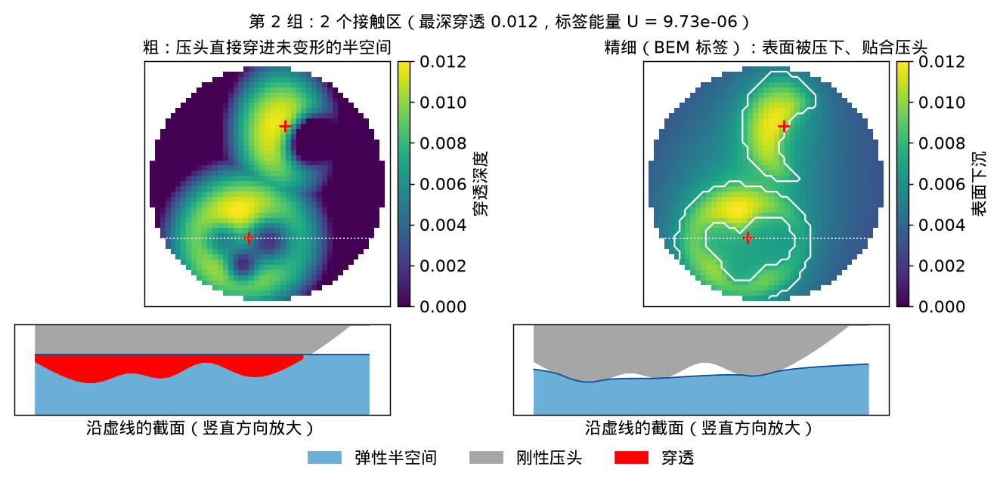
第 2 组样本，画法同第 1 组：左格两个凸起处各有一片穿透，右格白线围出两块接触区，形状与上面场景图的深蓝色块一致。标签 \(U=9.73\times10^{-6}\)。
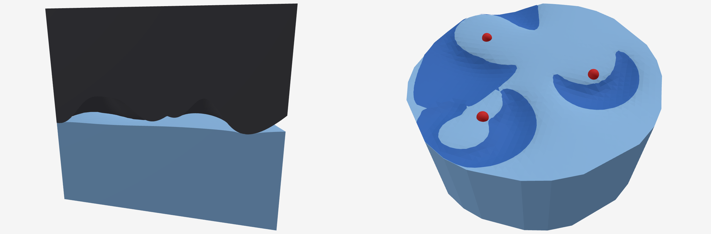
第 3 组的场景，画法同上：压头下表面有 3 个凸起，左幅剖面里压头底面有几处凸起同时压进半空间。右幅三个红点各带一块深蓝接触区，三块互不相连，每块都偏在凸起中心的一侧，说明凸起上的凹坑和压头的倾斜决定了实际接触落在哪里。
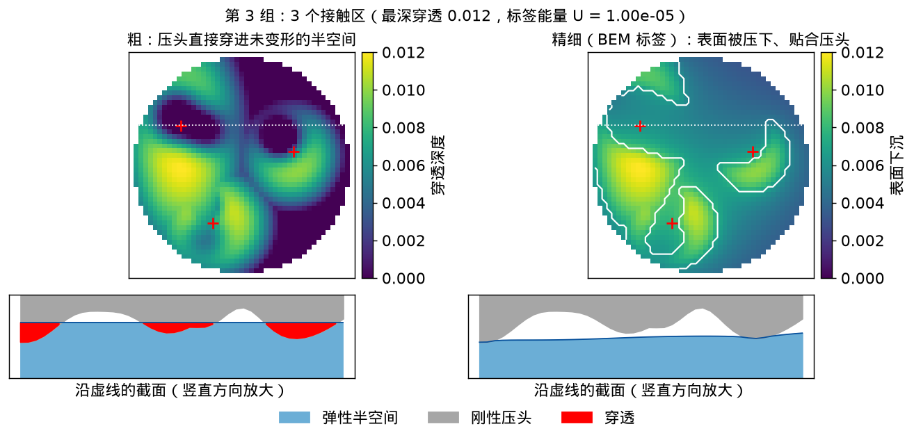
第 3 组样本，画法同第 1 组：左格三个凸起处各有一片穿透，右格白线围出三块互不相连的接触区，与上面场景图的深蓝色块一致。标签 \(U=1.00\times10^{-5}\)。三组压深相同，这三组里接触区越多，标签能量越大。
3.4 输入
高度图
- x、y 沿基体表面（方向固定），z 沿法向
- 以每个凸起中心为原点，取 ±0.05 窗口，20×20 格点
- 只用该凸起自身的曲面 \(z_k\)（含其高斯项，不含相邻凸起、\(a_h\)、倾斜），减去窗口内最小值
高度图描述局部形状，压深单独输入。
倾斜：小角度线性化（\(\sin\theta\approx\theta\)），只取法向高度变化，记倾斜项 \(t_y x-t_x y\)，水平位移为二阶小量。压在平面上时，6 个刚体自由度中只有竖直平移与两轴倾斜影响间隙。
压深：\(\delta_k=-\min_{\text{窗口}}\big(a_h+z_k+t_y x-t_x y\big)\)。\(z_k\) 是第 \(k\) 个凸起自身的形状；\(a_h\) 与 \(t_yx-t_xy\) 是整个压头的竖直位置与倾斜，所有凸起共用（倾角 \(t_x,t_y\) 全压头相同；倾斜引起的高度变化 \(t_yx-t_xy\) 随位置变化，离转轴越远升降越多，\(x,y\) 为全局坐标）。括号内即该凸起表面的实际高度，在第 \(k\) 个窗口的 20×20 点上取最小再取负，即该凸起最深点的穿透量；\(\delta_k\le0\) 表示未接触，该区不计入。
取 \(\log\delta\)：接触能随压深的变化通常接近幂律 \(U=c\,\delta^{p}\)：能量正比于压深的 \(p\) 次方，\(c\)、\(p\) 由形状决定。Hertz 球即 \(c=\tfrac{8}{15}E^*R^{1/2}\)、\(p=\tfrac52\)（1.4 第 6 步）。两边取对数得 \(\log U=\log c+p\log\delta\)，是 \(\log\delta\) 的线性函数，所以输入 \(\log\delta\) 便于网络表示；\(\delta\) 量级跨 \(10^{-3}\)–\(10^{-2}\)，取对数后数值范围也更均匀。
曲率：耦合项另需每区一个标量曲率 \(\kappa_k=\sqrt{\kappa_x\kappa_y}\)，取自生成器。
3.5 网络
\[U_c=\sum_k U_k+\sum_{i<j}U_{ij}\]
每个接触区一个单区能量 \(U_k\)，每对接触区一个耦合项 \(U_{ij}\)。
单区能量
- 高度图 → 卷积（3×3 滤波器，1→8 通道）→ 卷积（8→16 通道）→ 平均池化到 4×4 → 展平 16×4×4=256 → 全连接 256→32→16 → 16 维特征
- [16 维特征, \(\log\delta_k\)] → 全连接 17→64→64→1，输出记为 \(g\)
- \(U_k=\delta_k^2\exp(g)\)
推导：\(\delta^2\exp(g)\) 的性质
- \(\exp(g)>0\)，\(\delta^2\ge0\)，所以 \(U\ge0\)
- \(\delta=0\) 时 \(U=0\cdot\exp(g)=0\)
-
力 \(\dfrac{dU}{d\delta}\)：
- \(U=\delta^2\cdot\exp(g)\) 是两个因子相乘，用乘积求导 \((fh)'=f'h+fh'\)：\(\dfrac{dU}{d\delta}=2\delta\cdot\exp(g)+\delta^2\cdot\dfrac{d\exp(g)}{d\delta}\)
- \(g\) 依赖 \(\delta\)，用链式法则：\(\dfrac{d\exp(g)}{d\delta}=\exp(g)\dfrac{dg}{d\delta}\)；\(g\) 的输入是 \(\log\delta\)，再用一次链式法则：\(\dfrac{dg}{d\delta}=\dfrac{\partial g}{\partial\log\delta}\cdot\dfrac{d\log\delta}{d\delta}=\dfrac{\partial g}{\partial\log\delta}\cdot\dfrac1\delta\)
- 代入：\(\dfrac{dU}{d\delta}=2\delta\exp(g)+\delta^2\exp(g)\dfrac{\partial g}{\partial\log\delta}\dfrac1\delta=\delta\exp(g)\Big(2+\dfrac{\partial g}{\partial\log\delta}\Big)\)
-
含因子 \(\delta\)。另两个因子在 \(\delta\to0\)（\(\log\delta\to-\infty\)）时不会变成无穷大：
- 网络为 线性层 → tanh → 线性层 → tanh → 线性层。\(\tanh\) 的输出在 \([-1,1]\) 内，最后一层是这些有界值的加权和，所以 \(g\) 有界，\(\exp(g)\) 有界
- 输出对输入的导数按链式法则是各层权重与 \(\tanh'\) 的乘积；\(0<\tanh'\le1\)，权重为有限的数，所以 \(\dfrac{\partial g}{\partial\log\delta}\) 有界
因此 \(\delta\to0\) 时力 \(\to0\)：接触瞬间力为 0
-
易于表示 Hertz：\(U_{\text{Hertz}}=\dfrac{8}{15}E^*R^{1/2}\delta^{5/2}=\delta^2\cdot\dfrac{8}{15}E^*R^{1/2}\delta^{1/2}\)。令 \(\exp(g)=\dfrac{8}{15}E^*R^{1/2}\delta^{1/2}\)，两边取对数得 \(g=\log\Big(\dfrac{8}{15}E^*R^{1/2}\Big)+0.5\log\delta\)，即网络只需输出 \(\log\delta\) 的线性函数（斜率 0.5，截距由形状决定）
- 不固定指数：形状偏离 Hertz 时能量随压深的指数可变，由 \(g\) 对 \(\log\delta\) 的依赖表示。固定为 \(c\,\delta^p\)（网络只输出 \(c\)、\(p\)）的版本在同样数据上记住训练样本、测试误差高
区间耦合
多个接触区压在同一块基体上时，一个区把基体压下去，另一个区周围的表面也跟着下沉，于是另一个区需要压得少一些、存的能量也少一些。所以总能量小于各区单独能量之和 \(\sum_kU_k\)。\(U_{ij}\) 是对每一对接触区的负修正：
\[U_{ij}=-\mathrm{softplus}\big(\mathrm{NN}(\delta_i,\delta_j,\kappa_i,\kappa_j)\big)\cdot\sqrt{U_iU_j}\cdot\frac{L}{r_{ij}}\]
NN：全连接 4→32→1，输出一个数。\(r_{ij}\)：两区中心距离。仅当两区均接触时加入。修正量的大小 = 正系数 × 能量量级 × 距离衰减，各项作用：
| 项 |
作用 |
| 负号 |
修正只减不加 |
| softplus |
\(\mathrm{softplus}(x)=\log(1+e^x)\)：\(1+e^x>1\)，所以结果恒 \(>0\)；\(x\) 很负时 \(e^x\approx0\)，结果接近 0；\(x\) 很大时 \(\log(1+e^x)\approx\log e^x=x\)。即把网络输出的任意实数平滑地变成正数，保证负号不被网络翻转 |
| \(\sqrt{U_iU_j}\) |
给出能量单位与大小；两区能量越大修正越大，任一区为 0 时修正为 0 |
| \(L/r\) |
两区越远修正越小，按 \(1/r\) 衰减。\(r\) 是长度，\(1/r\) 的单位是 1/长度；乘一个长度 \(L\) 后 \(L/r\) 为纯数，\(U_{ij}\) 与 \(U_i\) 同为能量单位。\(L\) 作为参数随网络一起训练，初值 0.05 |
\(r\) 不作为网络输入，而以 \(1/r\) 固定在网络外，使训练范围以外的间距仍按 \(1/r\) 衰减。依据：由 Boussinesq 点力解（1.4），半空间表面一点受力 \(P\)，距离 \(r\) 处表面下沉 \(\dfrac{P}{\pi E^*r}\propto\dfrac1r\)。衰减系数取决于接触区尺寸，接触区尺寸由 \(\delta,\kappa\) 决定（Hertz：\(a^2=R\delta\)，\(R=1/\kappa\)，得 \(a=\sqrt{\delta/\kappa}\)），所以网络输入 \(\delta,\kappa\)。
训练：单区网络与耦合网络一起训练。损失为相对误差平方的均值 \(\big((U_{\text{pred}}-U)/U\big)^2\)，只拟合能量；力由自动求导（框架按计算图自动求梯度）得到。Adam 优化，学习率 \(2\times10^{-3}\)，3000 步。
3.6 缺陷
当前阶段在半空间合成数据上拟合能量，以下为这一阶段的问题。
- 接触区被计算域截断：BEM 网格只覆盖 \(r\le0.18\) 的圆盘（3.3），圆盘外压头虽穿入基体，却没有网格格子，既不施加不穿透条件也不计能量。生成时未剔除这类样本：2080 个训练样本中 56% 有接触格落在圆盘最外一圈（压深 0.003 时 28%，0.012 时 77%）。与把圆盘扩到 \(r\le0.32\) 重算比（前 240 个样本），被截断样本的标签能量偏低，中位数 0.6%，10% 的样本偏低超过 8.8%，最多 28.5%。而网络输入的窗口（凸起中心 ±0.05）可伸出圆盘，网络看到的形状与标签所用的不一致
- 曲率来自生成器：耦合项的 \(\kappa\) 是生成时的真值，且各向异性形状被压成一个标量 \(\sqrt{\kappa_x\kappa_y}\)；换成从高度图提取后效果未知
- 倾斜不进高度图：高度图只用 \(z_k\)（凸起未倾斜时的形状），实际表面是 \(a_h+z_k+t_yx-t_xy\)，倾斜使凸起一侧压得更深、另一侧更浅。倾斜只通过 \(\delta_k\)（最深点）进入，所以 \(z_k\) 与 \(\delta_k\) 相同、倾斜不同的两个样本，网络输入完全一样，真实能量却不同。窗口内倾斜造成的高度差最大约 \(0.02\times0.1\times2=0.004\)，与 \(\delta\)（0.003–0.012）同量级
结论：方案已有 \(U_c\) 定义、单区 + 耦合的网络结构和半空间合成数据；当前主要限制是输入特征。
Demo：Genesis 中的 hydro
第 1 节所述 hydro 在 Genesis 中的实际运行；第 5 节的对比对象就是它。
4.1 官方用例
Genesis 用 SAP 求解器的官方用例共 10 个场景，接触默认全部走压力场，覆盖刚体–刚体、刚体–地面、刚体–软体、软体–地面、软体–软体五类接触对。以下四个原样运行，官方检查均通过。
两条关节链落到盒子上（test_sap_rigid_rigid_hydroelastic_contact，全为刚体）
这段视频展示纯刚体之间的接触也由压力场给出。蓝色是方盒，灰色的是两条关节链。开头一条链已经斜搭在盒顶，另一条从上方落下，约第 1 秒压到第一条链上并在关节处弯折，之后两条链都停在盒上不再动。
地上 0.5 × 0.5 × 0.2 m 方盒，两条由球和胶囊（半径 24 mm）以关节连成的链落下；刚体压力场刚度 \(H=10^8\) Pa，\(\tau_d=0.1\) s；80 步 = 1.33 s，视频慢放约 3.75 倍；仅改光照、箱体颜色和相机仰角。
刚体十字架压软球（test_sap_fem_vs_robot）
这段视频展示刚体压软体。白色是 FEM 软球，灰色是刚体十字架。开头十字架的四条腿水平伸开，落到球顶后腿绕关节向下垂，约第 2 秒起十字架停在球顶不再动。
FEM 软球半径 0.2 m（\(E=10^5\) Pa、\(\nu=0.4\)）放在地上，自由刚体十字架（四条带关节的腿）落在球顶；接触对：刚体–软球、软球–地面；\(\delta t=1/60\) s、每步 2 个子步、50 步。检查：球心下沉超过 2 cm，十字架停在球顶。
软方块停在软球顶上（test_implicit_sap_coupler_collide_sphere_box）
这段视频展示软体压软体。白色大球是 FEM 软球，顶上深灰色小方块是 FEM 软方块。整段视频里方块一直停在球顶，两者几乎不动：两个物体各自的压力场在等压面上互相推，托住了方块。
FEM 软球半径 0.1 m 放在地上，球顶放边长 1.5 cm 的 FEM 软方块（\(E=10^4\) Pa、密度 50 kg/m³）；接触对：软方块–软球（两个压力场的等压面）、软球–地面；40 步。检查：两者静止、高度误差 < 5 mm。
机械臂夹起软球（test_franka_panda_grasp_fem_entity，软球一组）
这段视频展示靠接触力夹起软体。白色小球是 FEM 软球，上方是 Franka 机械臂的夹爪。第 0 秒到约第 1 秒夹爪两指合拢夹住小球，约第 1.5 秒起小球随夹爪一起上移，之后一直夹在两指之间。
Franka 机械臂夹起半径 2 cm 的 FEM 软球（\(E=10^5\) Pa、\(\nu=0.4\)）后上提；接触对：手指–软球、软球–地面；等待 15 步、夹 10 步、上提 65 步、保持 25 步。检查：软球随夹爪上移 5 cm、误差 < 5 mm。
4.2 Genesis 的 hydro 与受控场景
Genesis 与原论文的差别（第 1 节各"实现"汇总）
- 压力场：\(p=\dfrac{H}{D}\times\)深度（1.1），斜率随物体尺寸 \(D\) 变小；细长或薄处压强偏低
- 刚度：全部刚体共用 \(H\)，FEM 软体单独设 \(E_h\)，二者都与杨氏模量无关（1.1）
- 离散：每块接触多边形只在形心取一点（1.2）
受控场景：刚球压 FEM 块（块的杨氏模量远大于压力场模量 \(E_h\)，块几乎不变形）：物体从刚好接触处静止释放、只受自重，测静止后的压深 \(\delta\)，与压力场公式 \(F(\delta)=mg\) 解出的预测压深比较。
推导：刚球压 FEM 块的压力场公式
- 块内某点压强 \(=\dfrac{E_h}{D}\times\)该点深度（1.1 实现；\(D\)：块内到表面的最大距离）。刚球几乎不变形，接触面就是球面落在块内的部分，各处深度 = 球面进入块的深度 \(d(\mathbf x)\)
- 力 = 压强积分：\(F=\displaystyle\int\frac{E_h}{D}d(\mathbf x)\,dA=\frac{E_h}{D}\int d(\mathbf x)\,dA=\frac{E_h}{D}V\)，\(V\) 为球进入块的体积（球冠）
-
球冠体积：竖直坐标 \(y\) 从球最低点向上量。球心在最低点正上方 \(R\) 处，高度 \(y\) 处水平截面是圆，半径 \(r\) 满足勾股定理 \(r^2+(R-y)^2=R^2\)，展开得 \(r^2=2Ry-y^2\)；截面面积 \(\pi(2Ry-y^2)\)。对 \(y\) 从 0 到 \(\delta\) 积分：
\[V=\int_0^\delta\pi(2Ry-y^2)\,dy\]
- 分两项积分：\(2Ry\) 的原函数为 \(Ry^2\)，\(y^2\) 的原函数为 \(\dfrac{y^3}{3}\)
- 代入上限 \(\delta\)、下限 0（下限处都为 0）：\(V=\pi\Big(R\delta^2-\dfrac{\delta^3}{3}\Big)\)
- 即 \(V=\pi R\delta^2\Big(1-\dfrac{\delta}{3R}\Big)\)
- 代入第 2 步：
\[F=\frac{E_h}{D}\,\pi R\,\delta^{2}\Big(1-\frac{\delta}{3R}\Big)\]
-
\(\delta\ll R\) 时括号 \(\approx1\)，\(F\approx\dfrac{E_h}{D}\pi R\delta^2\)。平衡 \(F=mg\)：\(\delta\approx\sqrt{\dfrac{mgD}{\pi E_hR}}\propto R^{-1/2}\)；Hertz 为 \(F=\tfrac43E^*R^{1/2}\delta^{3/2}\)，压深 \(\propto R^{-1/3}\)。
4.3 参数扫描：每次只改一个量
刚球压 FEM 块：改球半径（同为 1 kg）（预期：压深 \(\propto R^{-1/2}\)；Hertz \(\propto R^{-1/3}\)）
| \(R\)（m） |
重叠实测（mm） |
公式（mm） |
实测/公式 |
实测相对 \(R=0.1\) |
Hertz 相对值 |
视频 |
| 0.05 |
7.93 |
8.00 |
0.991 |
1.42 |
1.26 |
▶ |
| 0.1 |
5.60 |
5.56 |
1.01 |
1 |
1 |
▶ |
| 0.2 |
4.04 |
3.90 |
1.03 |
0.722 |
0.794 |
▶ |
半径每加倍压深 ×0.706、×0.722（\(R^{-1/2}\)），弹性解为 ×0.794（\(R^{-1/3}\)），调参无法消除。
刚球压 FEM 块：改压力场模量 \(E_h\)（预期：压深 \(\propto E_h^{-1/2}\)）
| \(E_h\)（Pa） |
重叠实测（mm） |
公式（mm） |
实测/公式 |
块自身下陷（mm） |
视频 |
| \(10^5\) |
5.59 |
5.56 |
1.01 |
0.0161 |
▶ |
| \(10^6\) |
1.82 |
1.75 |
1.04 |
0.0267 |
▶ |
| \(10^7\) |
0.615 |
0.551 |
1.12 |
0.0353 |
▶ |
\(E_h\) 每 ×10，压深 ÷3.07、÷2.96，符合 \(E_h^{-1/2}\)。
刚球压 FEM 块：改全局刚度 \(H\)（预期：\(H\) 只当刚体一侧的梯度，静止力 = 面积 × 块的压强，与 \(H\) 无关，见 1.2 实现）
| \(H\)（Pa） |
重叠实测（mm） |
公式（mm） |
实测/公式 |
视频 |
| \(10^6\) |
5.59 |
5.56 |
1.01 |
▶ |
| \(10^8\) |
5.59 |
5.56 |
1.01 |
▶ |
| \(10^{10}\) |
5.60 |
5.56 |
1.01 |
▶ |
\(H\) 不影响压深，静力只由块的压力场模量决定。
结论：Genesis 中刚体压软体的结果符合压力场公式（块足够硬时实测/预测 0.99–1.12），对半径的依赖为 \(R^{-1/2}\)，与弹性解 \(R^{-1/3}\) 不同，调参无法消除；全局刚度 \(H\) 不影响静止力，压深只由块的压力场模量决定。
实验方案：在原理层面与 hydro 对比
5.0 设定
检验对象：第 1 节提取的 hydro 两个假设。
- 假设一（每点压强只取决于该点穿入深度）：E1、E2、E4
- 假设二（相邻接触区互不影响）：E3
- E5：hydro 的接触能量与粗模型无关
场景：刚性压头准静态（只求平衡状态，忽略惯性）压入弹性体至压深 \(\delta\)（压头最低点进入基体原表面以下的深度），无摩擦。
裁判：弹性力学解析解；解析解不足时用与造标签不同的数值方法：
- 轴对称 FEM：问题绕中轴旋转对称时，只在一个二维截面上求解，精度高、成本低
- BEM：只离散接触面、利用半空间解析解的方法
- PolyFEM：另一套独立的有限元库
hydro 搭法
判据：同一物体、同一压深，只改一个量，比较力的倍数。\(E_h\) 在比值中约掉，调参无法改变倍数。hydro 刚度用训练数据拟合一次，另报取杨氏模量时的结果。
标签验证：每个实验另用 IPC + FEM 造标签（3.1 的 \(U_c\)，粗模型为刚体时即精细解弹性能），与裁判比，判据为偏差 ≤ 2%。标签数值依赖三个离散参数，均用下面的 Richardson 外推推到极限：
- \(\hat d\)：IPC 的接触距离，表面间距小于它即开始互相推开。\(\hat d\) 越大能量越高，取几档外推到 \(\hat d\to0\)
- 网格尺寸 \(h\)：取三档 \(h\)、\(h/2\)、\(h/4\)，外推到 \(h\to0\)
- 块大小：块有限大，取两档外推到无限大
方法：Richardson 外推（本页之后凡说「外推」都是它）
① 外推值
已知：中等档与细档两次计算的读数 \(X_m\)、\(X_f\)，两档尺寸比 \(r\)，收敛阶 \(p\)；求：离散无限细时的真值 \(X^*\)。
\[\begin{cases}\color{#c0392b}{X(h)=X^*+C\,h^p} & \color{#c0392b}{(1)}\\[4pt] \color{#c0392b}{X_m=X^*+C\,(r h_f)^p} & \color{#c0392b}{(2)}\\[4pt] \color{#c0392b}{X_f=X^*+C\,h_f^p} & \color{#c0392b}{(3)}\end{cases}\ \color{#c0392b}{\Longrightarrow\ X^*=X_f+\frac{X_f-X_m}{r^p-1}}\]
式 (1)：误差模型，用尺寸 \(h\) 的离散（网格单元尺寸、\(\hat d\) 或块的 \(1/L\)）算出的值等于真值加一项误差。\(h\) 越小 → 误差越小，因为离散越细越接近连续问题；\(p\)（收敛阶）越大 → 误差缩得越快，\(h\) 每减半，误差缩成原来的 \(2^p\) 分之一。
式 (2)(3)：同一个问题用中等档和细档各算一次（\(r>1\)，本页网格取 \(r=2\)），两个读数里的真值相同，中等档的误差是细档的 \(r^p\) 倍。
结果：(2)(3) 相减消去未知的 \(C\)，再代回 (3)。从细档读数出发，再顺着「中等 → 细」的方向多走一步就到真值。两档差得越多 → 细档离真值越远，要多走越多；\(p\) 越大 → 细档剩下的误差越小，多走的一步越短。
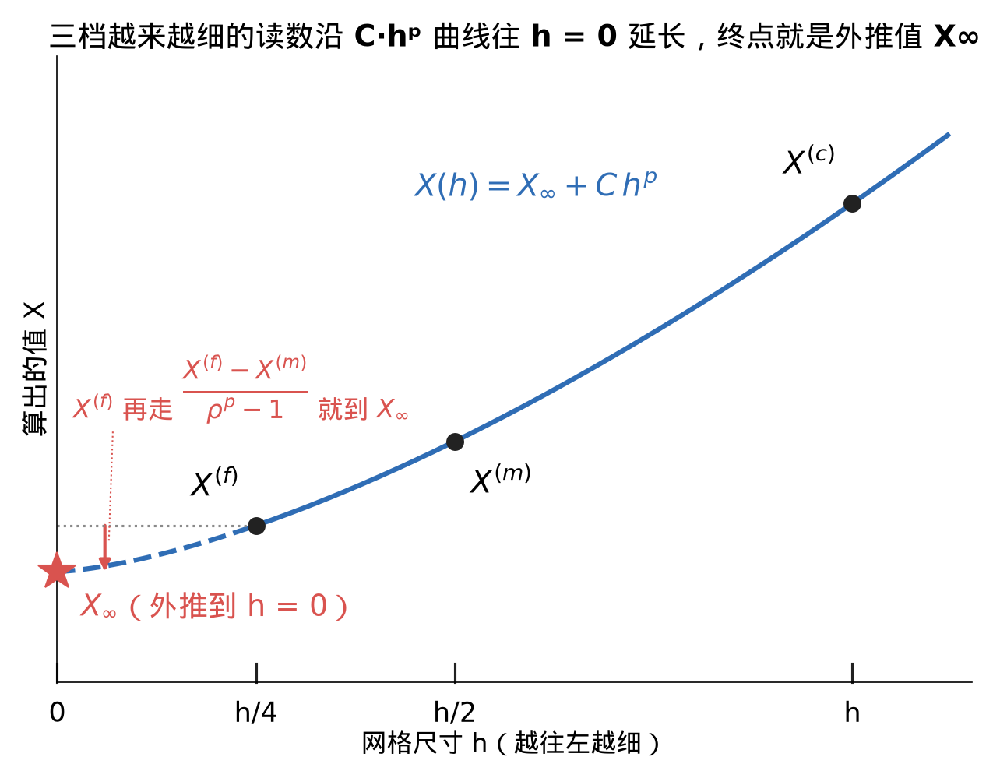
横轴是网格尺寸 h，越往左越细；纵轴是用这档网格算出的值 X。三个黑点是粗、中、细三档：h、h/2、h/4 时的读数 X_c、X_m、X_f，相邻两档尺寸差 r = 2 倍。网格越细，读数越靠近真值，误差按 C·hᵖ 缩小，所以三点落在蓝色曲线 X(h) = X* + C hᵖ 上。把曲线沿虚线延长到 h = 0，终点红星就是网格无限细时的值 X*。不用真把曲线画出来：两档读数相减消去 C，就知道 X_f 还差多少，即从 X_f 再往下走 (X_f − X_m)/(r^p − 1)（红箭头）就到 X*。三档读数两两的差之比又给出收敛阶 p（②）。
推导
- 两式相减：\(X_m-X_f=C\,h_f^p\,(r^p-1)\)，所以 \(C\,h_f^p=\dfrac{X_m-X_f}{r^p-1}\)
- 代回细档：\(X^*=X_f-C\,h_f^p=X_f-\dfrac{X_m-X_f}{r^p-1}=X_f+\dfrac{X_f-X_m}{r^p-1}\)
② 收敛阶 \(p\) 怎么来
已知：粗、中、细三档读数 \(X_c\)、\(X_m\)、\(X_f\)，相邻两档尺寸比 \(r\)；求：收敛阶 \(p\)。
\[\begin{cases}\color{#c0392b}{X_c-X_m=C\,h_m^p\,(r^p-1)} & \color{#c0392b}{(1)}\\[4pt] \color{#c0392b}{X_m-X_f=C\,h_f^p\,(r^p-1)} & \color{#c0392b}{(2)}\\[4pt] \color{#c0392b}{h_m=r\,h_f} & \color{#c0392b}{(3)}\end{cases}\ \color{#c0392b}{\Longrightarrow\ p=\frac{\ln\big[(X_c-X_m)/(X_m-X_f)\big]}{\ln r}}\]
式 (1)(2)：① 式 (1) 用在粗–中、中–细相邻两档上，每对之差只剩误差之差。
式 (3)：相邻两档的尺寸比。
结果：(1) 除以 (2)，由 (3) 得两档差之比为 \(r^p\)，取对数。看网格每细一档，读数的变化缩小了多少倍，就知道误差按几次方收敛。三档差值噪声大时 \(p\) 会跳，所以同一组实验所有压深共用一个 \(p\)（取各压深实测阶的中位数）。
③ 本页三项各取什么
- 网格：三档 \(h\)、\(h/2\)、\(h/4\)（\(r=2\)），\(p\) 按 ② 实测，代入 ①
- \(\hat d\)：两档，取 \(p=1\)（偏差与 \(\hat d\) 成正比，\(h\) 换成 \(\hat d\)），即两点连直线延长到 \(\hat d=0\)
- 块大小：两档半宽 \(L_s<L_l\)，取 \(h=1/L\)、\(p=1\)，即两点连直线延长到 \(1/L=0\)（块无限大）
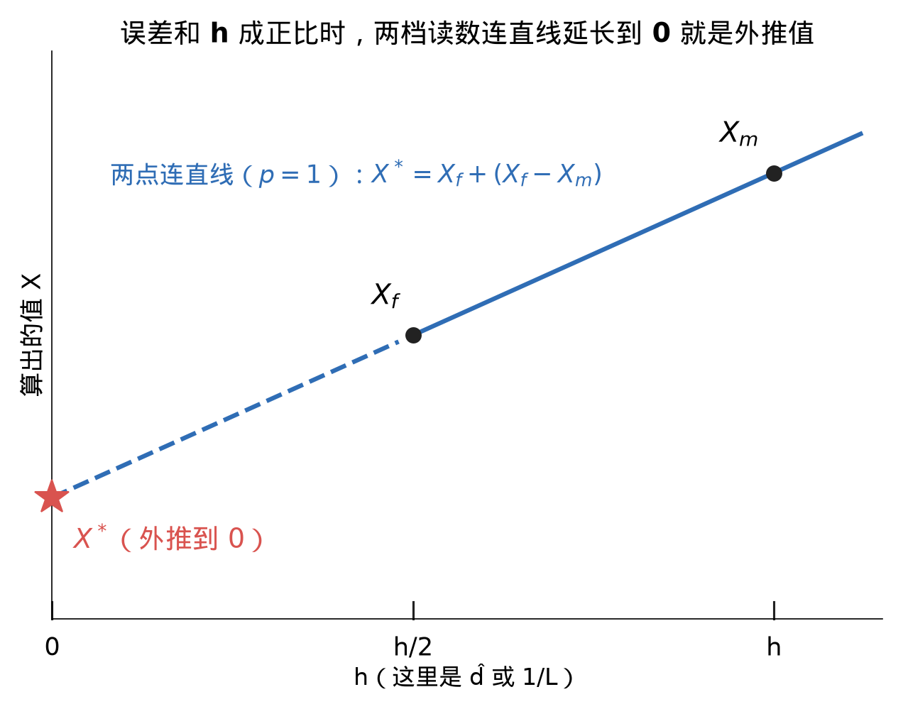
误差和 h 成正比（p = 1）时，曲线就是直线。只要两档读数 X_m（h）和 X_f（h/2），连成直线、沿虚线延长到 0，红星就是外推值；代进公式就是 X* = X_f + (X_f − X_m)。\(\hat d\) 和块尺寸（用 1/L 当 h）都是这么外推的。
- 三项修正量相加：最终值 = 块外推值 + 网格外推值 − 中等网格大块的读数（各项都从同一个基准读数出发修正，修正量叠加）
E0 前提：标签与解析解一致
设置：半径 1 刚球压长方体（下称块），杨氏模量 \(E=10^5\)、泊松比 \(\nu=0.3\)，压深 0.004–0.024，比较标签弹性能与 Hertz 弹性能（1.4 第 6 步）之比，1 为一致：
\[U_{\text{Hertz}}=\frac{8}{15}E^{*}R^{1/2}\delta^{5/2},\qquad E^{*}=\frac{E}{1-\nu^{2}}=\frac{10^5}{1-0.09}\approx1.099\times10^5\]
这段视频是造标签的仿真本身：IPC + FEM 把刚球（\(R=1\)）一档一档压进块里，块顶面在接触区内贴住球面。共 6 个压深，每个停 1.5 秒，第 0、1.5、3、4.5、6、7.5 秒依次是 \(\delta=\) 0.004、0.006、0.009、0.013、0.018、0.024，标题给出当前压深和球与块的最小间隙。左图是过球心的竖直截面，竖直方向放大：红点是球面，带点的蓝线是变形后的块顶面，灰色虚线是块顶面原来的位置。接触区内蓝线紧贴红点；接触区外蓝线也低于虚线，但与红点分开，和 1.4 节 Hertz 示意图的形状一致。右图从上往下看块顶面，颜色是竖直位移（0 到 −0.025），中心最深，向外逐渐变浅。标题里的最小间隙在 \(0.90\text{–}0.98\times10^{-4}\) 之间，小于这次仿真的 \(\hat d=1.25\times10^{-4}\)：IPC 在两表面距离小于 \(\hat d\) 时才把它们推开，所以球和块之间始终留着一层比 \(\hat d\) 还薄的缝，这层缝让标签偏离 Hertz，下图就是看这个偏离有多大。
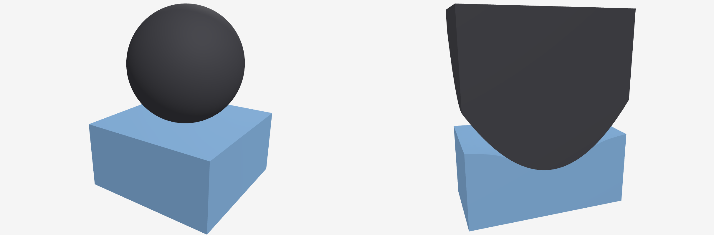
这张图是下面收敛曲线那批仿真的场景，画的是最深压深 0.024。左边是整体、真实比例：刚球压在弹性块上，压深只有球半径的几十分之一，所以这样看不出块上有坑。右边是过球心剖开的剖面，竖直方向放大了 5 倍：块顶面被压出一个坑，球正坐在坑里；红色那一段是块表面真正受到接触力的地方，它的宽度约等于 Hertz 公式里的接触圈直径 \(2a\)（这里 \(a=\sqrt{R\delta}\approx0.155\)）——这就是标签要和 Hertz 比的那个接触。
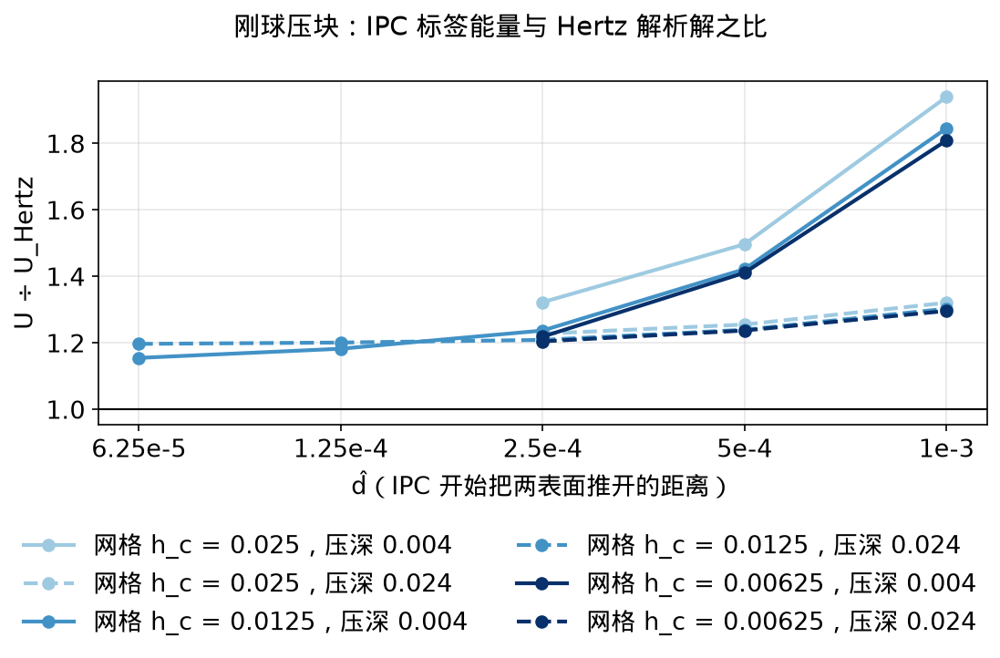
左右两幅分别是压深 0.004 和 0.024 时，IPC 标签能量与 Hertz 解析解之比随 \(\hat d\) 的变化，三种点形对应三档网格（\(h_c\) 0.025 / 0.0125 / 0.00625）。\(\hat d\) 从 1e-3 减到 2.5e-4，压深 0.004 的比值从 1.81–1.94 降到 1.22–1.32；只有 \(h_c\) 0.0125 跑到 6.25e-5，比值降到 1.16（压深 0.024 为 1.20）。比值随 \(\hat d\) 变小、网格变细一直在下降、还没到 1，所以标签要把 \(\hat d\) 和网格都外推到 0 才能和 Hertz 比。
结果：用 Richardson 外推（见 5.0「方法」）：网格取 0.025、0.0125、0.00625 三档，实测收敛阶 \(p=1.8\text{–}2.0\)；\(\hat d\)、块大小各两档、\(p=1\)。外推后压深 0.004–0.024 处比值为 1.003–1.012。
结论：标签与 Hertz 一致，标签可信。
E1 球压厚块：球半径 ×2
设置：刚球压厚块（基体远大于接触区，可按半空间处理），同一压深 \(\delta\)，球半径 \(R\to2R\)。
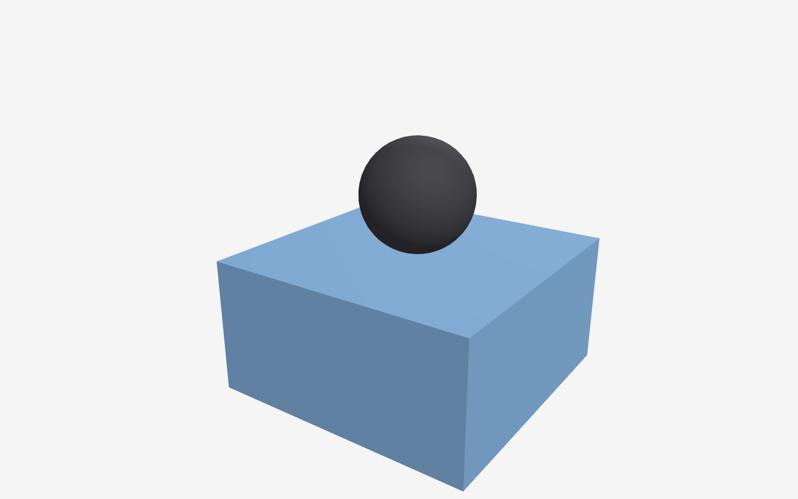
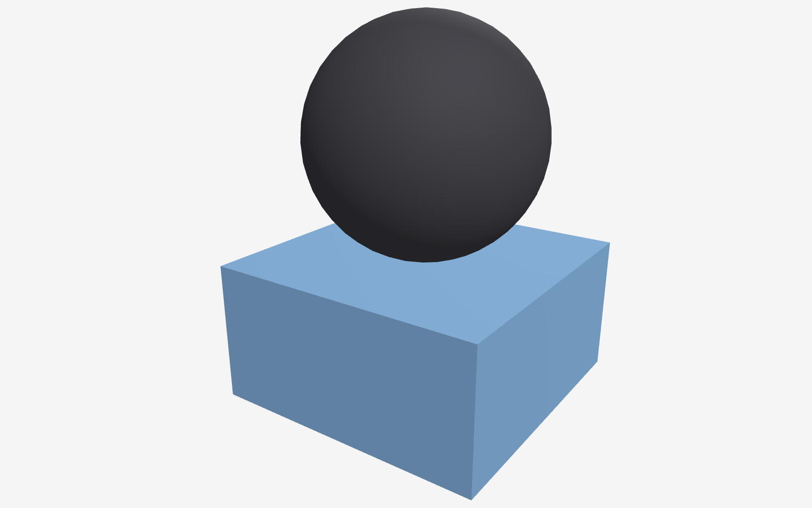
两张图只差球的半径，用来检验压到同样深时力怎样随球半径变化。深灰色是刚球，蓝色是被压的弹性块（宽 4.8、深 2.4，远大于接触区，可当半空间）。上图球半径 \(R=1\)，下图 \(2R=2\)，两球都压进块顶面 0.024；压深相对块很小，图上看不出凹陷。两张图用同一个相机，大小差别就是真实的几何差别。
裁判（Hertz，1.4 第 5 步）
- \(F=\dfrac43E^*R^{1/2}\delta^{3/2}\)。\(E^*\) 与 \(\delta\) 不变，只有 \(R^{1/2}\) 变化
- \(\dfrac{F(2R)}{F(R)}=\dfrac{(2R)^{1/2}}{R^{1/2}}=\sqrt2\approx1.41\) → ×1.41
hydro (A)：\(F_A=\dfrac{E_h}{D}\,\pi R\,\delta^{2}\) → ×2
推导：hydro (A)
-
重叠体积 \(V\)
- 竖直坐标 \(y\) 从球最低点向上量。球心在最低点正上方 \(R\) 处，在高度 \(y\) 处水平截球，截面是圆，半径 \(r\) 满足勾股定理 \(r^2+(R-y)^2=R^2\)
- 展开：\(r^2+R^2-2Ry+y^2=R^2\)，即 \(r^2=2Ry-y^2\)。\(y\le\delta\ll R\)，\(y^2\) 相对 \(2Ry\) 可忽略：\(r^2\approx2Ry\)
- 截面面积 \(\pi r^2=2\pi Ry\)
-
重叠部分是 \(y\) 从 0 到 \(\delta\) 的这一段，体积 = 截面面积对高度积分：
\[V=\int_0^\delta2\pi R\,y\,dy=2\pi R\cdot\frac{\delta^2}{2}=\pi R\,\delta^2\]
-
代入 5.0 的 \(F_{\text{hydro}}=\dfrac{E_h}{D}V\)：
\[F_A=\frac{E_h}{D}\,\pi R\,\delta^{2}\]
-
\(E_h\)、\(D\)、\(\delta\) 不变，\(\dfrac{F_A(2R)}{F_A(R)}=\dfrac{2R}{R}=2\) → ×2
该结果与压力场形式无关：把压强写成任意深度函数 \(p(\text{深度})\)
- 离中心 \(r\) 处压头进入基体的深度为 \(\delta-\dfrac{r^2}{2R}\)（1.4 第 3 步）
- 半径 \(r\)、宽 \(dr\) 的圆环面积为 \(2\pi r\,dr\)，所以 \(F=\displaystyle\int p\Big(\delta-\frac{r^2}{2R}\Big)\,2\pi r\,dr\)
- 换元 \(u=\dfrac{r^2}{2R}\)：求导 \(\dfrac{du}{dr}=\dfrac{r}{R}\)，所以 \(r\,dr=R\,du\)，\(2\pi r\,dr=2\pi R\,du\)。积分限：\(r=0\) 时 \(u=0\)；深度为 0 的边缘处 \(u=\delta\)
- 代入：\(F=\displaystyle\int_0^\delta p(\delta-u)\,2\pi R\,du=2\pi R\int_0^\delta p(\delta-u)\,du\)
- 积分 \(\int_0^\delta p(\delta-u)\,du\) 中不含 \(R\)，所以对任意 \(p\) 都有 \(F\propto R\)
hydro (B)：比值 \(\dfrac{2(R+D)}{2R+D}\)，介于 1 与 2 之间
推导：hydro (B)
- 球的压强场：球内最大深度是球心到表面的距离 \(R\)，由 1.1 实现，球的压强梯度 \(g_{\text{球}}=K/R\)；块的压强梯度 \(g_{\text{块}}=K/D\)
- 由 1.2 第 2 步串联：\(g=\dfrac{g_{\text{球}}\,g_{\text{块}}}{g_{\text{球}}+g_{\text{块}}}=\dfrac{(K/R)(K/D)}{K/R+K/D}\)。分子分母同乘 \(RD/K\)：\(g=\dfrac{K}{D+R}\)
- 由 1.2 第 2 步，每处压强 \(p=g\times\)重叠深度；与 5.0 同样积分得 \(F_B=g\,V=\dfrac{K}{R+D}\cdot\pi R\delta^2\)
- 比值：\(\dfrac{F_B(2R)}{F_B(R)}=\dfrac{2R/(2R+D)}{R/(R+D)}=\dfrac{2(R+D)}{2R+D}\)。\(D\gg R\) 时趋于 2，\(D\ll R\) 时趋于 1，所以介于 1 与 2 之间
标签验证
这段视频是 \(R=2\) 的标签仿真，画法同 E0 的视频：左图过球心的竖直截面（红点是球面，蓝线是变形后的块顶面，灰色虚线是原表面，竖直方向放大），右图俯视块顶面的竖直位移。4 个压深每个停 1.5 秒，第 0、1.5、3、4.5 秒依次是 \(\delta=\) 0.004、0.006、0.009、0.013。拿第 4.5 秒（\(\delta=0.013\)）和 E0 视频同一压深的第 4.5 秒对比：球大一倍，蓝线贴住红点的那一段明显更宽，右图中心的深色圆斑也更大，对应 Hertz 接触半径 \(\sqrt{R\delta}\) 随 \(R\) 变大。标题里的最小间隙在 \(0.98\text{–}1.03\times10^{-4}\) 之间，同样小于 \(\hat d=1.25\times10^{-4}\)。
按 E0 的设置造 \(R=2\) 的标签（球面细分加一级），用 Richardson 外推（见 5.0「方法」）：块半宽 2.4、4.8 两档，网格 0.025、0.0125、0.00625 三档，\(\hat d\to0\)，与 \(R=1\) 比：
| 压深 |
0.004 |
0.006 |
0.009 |
0.013 |
| 标签能量比 |
1.401 |
1.425 |
1.425 |
1.419 |
| 解析 |
1.414 |
1.414 |
1.414 |
1.414 |
偏差 −1.0% 至 +0.7%，通过。
结论：球半径 ×2，解析 ×1.41，标签 ×1.40–1.43，hydro (A) 恒为 ×2。
E2 平底压头：半径 ×1、×2、×4
设置：刚性平底圆柱压头（半径 \(a\)）压厚块，同一压深 \(\delta\)，\(a\) 取 1、2、4 倍。hydro 用 (A)。
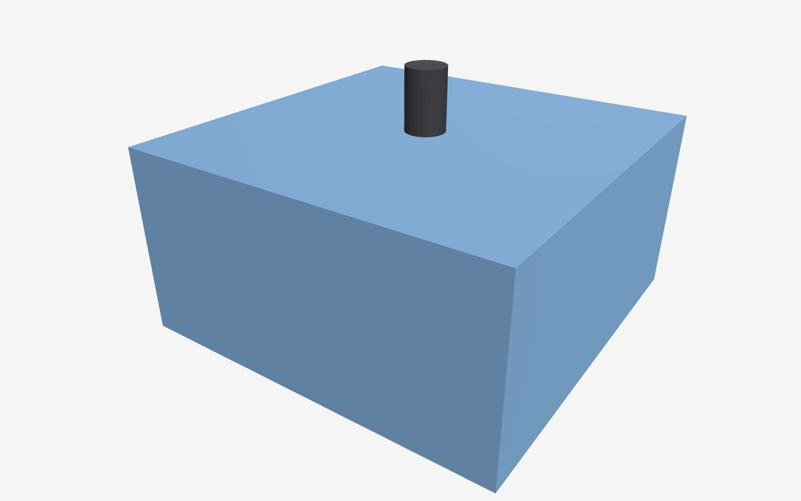
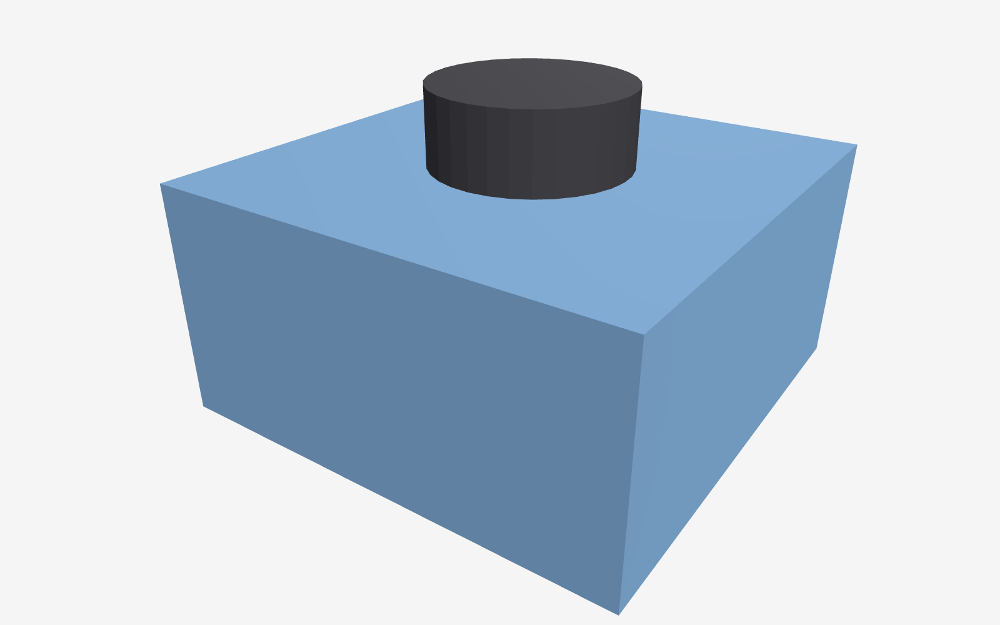
两张图只差平底压头的半径。深灰色圆柱是刚性平底压头（高 0.8），蓝色是和 E1 同样的块（宽 4.8、深 2.4）。上图压头半径 \(a=0.25\)，下图 \(4a=1.0\)，压深都是 0.024。平底压头的接触区就是整个底面，半径变几倍，接触面积就变几的平方倍。
裁判：Boussinesq 平底解 \(F_{\text{解析}}=2E^{*}a\,\delta\) → 半径 ×1、×2、×4，力 ×1、×2、×4
推导：Boussinesq 平底解（与 1.4 第 4 步相同的方法）
- 几何要求：平底压头底面是平的，接触区内各点下沉都等于 \(\delta\)
- 设压强分布 \(p(t)=\dfrac{p_m}{\sqrt{1-t^2/a^2}}=\dfrac{p_m\,a}{\sqrt{a^2-t^2}}\)（\(t\) 为到接触中心的距离；\(p_m\) 为待定常数；该分布在边缘处趋于无穷，对应平底的直角边缘）
-
求它产生的下沉。与 1.4 第 4 步相同：求下沉的点 \(B=(r,0)\)，施压点 \(C=(r+s\cos\varphi,\ s\sin\varphi)\)，\(t^2=r^2+2rs\cos\varphi+s^2\)，\(a^2-t^2=c^2-(s+r\cos\varphi)^2\)，\(c^2=a^2-r^2\sin^2\varphi\)，所以
\[p=\frac{p_m\,a}{\sqrt{c^2-(s+r\cos\varphi)^2}}\]
-
对 \(s\) 积分：令 \(x=s+r\cos\varphi\)，\(x\) 从 \(-c\) 到 \(c\)，\(\displaystyle\int_{-c}^{c}\frac{dx}{\sqrt{c^2-x^2}}=\Big[\arcsin\frac{x}{c}\Big]_{-c}^{c}=\frac{\pi}{2}-\Big(-\frac{\pi}{2}\Big)=\pi\)，与 \(c\) 无关。所以 \(\displaystyle\int p\,ds=p_m\,a\,\pi\)
-
代入 \(u(B)=\dfrac{1}{\pi E^*}\displaystyle\int_0^\pi\Big[\int p\,ds\Big]d\varphi\)（1.4 第 4 步）：
\[u=\frac{1}{\pi E^*}\int_0^\pi p_m a\pi\,d\varphi=\frac{1}{\pi E^*}\cdot p_m a\pi\cdot\pi=\frac{\pi p_m a}{E^*}\]
与 \(r\) 无关，接触区内各点下沉相同，满足第 1 步
-
令 \(u=\delta\)：\(\dfrac{\pi p_m a}{E^*}=\delta\)，得 \(p_m=\dfrac{E^*\delta}{\pi a}\)
-
合力：半径 \(t\)、宽 \(dt\) 的圆环面积 \(2\pi t\,dt\)
\[F=\int_0^a\frac{p_m a}{\sqrt{a^2-t^2}}\,2\pi t\,dt=2\pi p_m a\int_0^a\frac{t}{\sqrt{a^2-t^2}}\,dt\]
\(\dfrac{t}{\sqrt{a^2-t^2}}\) 的原函数为 \(-\sqrt{a^2-t^2}\)（求导验证：\(\dfrac{d}{dt}\big(-\sqrt{a^2-t^2}\big)=\dfrac{t}{\sqrt{a^2-t^2}}\)），所以 \(\displaystyle\int_0^a\frac{t}{\sqrt{a^2-t^2}}dt=-0-(-a)=a\)，\(F=2\pi p_m a^2\)
-
代入 \(p_m=\dfrac{E^*\delta}{\pi a}\)：
\[F_{\text{解析}}=2\pi a^2\cdot\frac{E^*\delta}{\pi a}=2E^{*}a\,\delta\]
-
\(E^*\)、\(\delta\) 不变，\(F\propto a\)：半径 ×1、×2、×4 → 力 ×1、×2、×4
hydro
- 平底各点进入基体的深度都是 \(\delta\)，所以压强处处为同一个值 \(p(\delta)\)
- \(F_{\text{hydro}}=\displaystyle\int p\,dA=p(\delta)\times\text{接触面积}=p(\delta)\cdot\pi a^2\)
- \(F\propto a^2\)：半径 ×1、×2、×4 → 力 ×1、×4、×16
标签验证：半径 0.25、0.5、1.0，网格随半径缩放，用 Richardson 外推（见 5.0「方法」）到 \(\hat d\to0\)、块无限大、网格无限细。压深 0.003–0.024 处，半径 ×2 时标签能量比 2.000–2.002，×4 时 4.000–4.076（解析 2、4），全部在 2% 内；各半径标签与 Boussinesq 能量之比 1.000–1.022。
结论：半径 ×4，解析力与标签均 ×4，hydro ×16。
E3 两个平底凸台：只改间距
设置：一个刚体，下方两个半径 \(a\) 的平底凸台，顶上一根细杆连成一体，同深压入厚块（可按半空间处理），压深 \(\delta\)，中心距 \(L=4a\)、\(10a\)、∞。
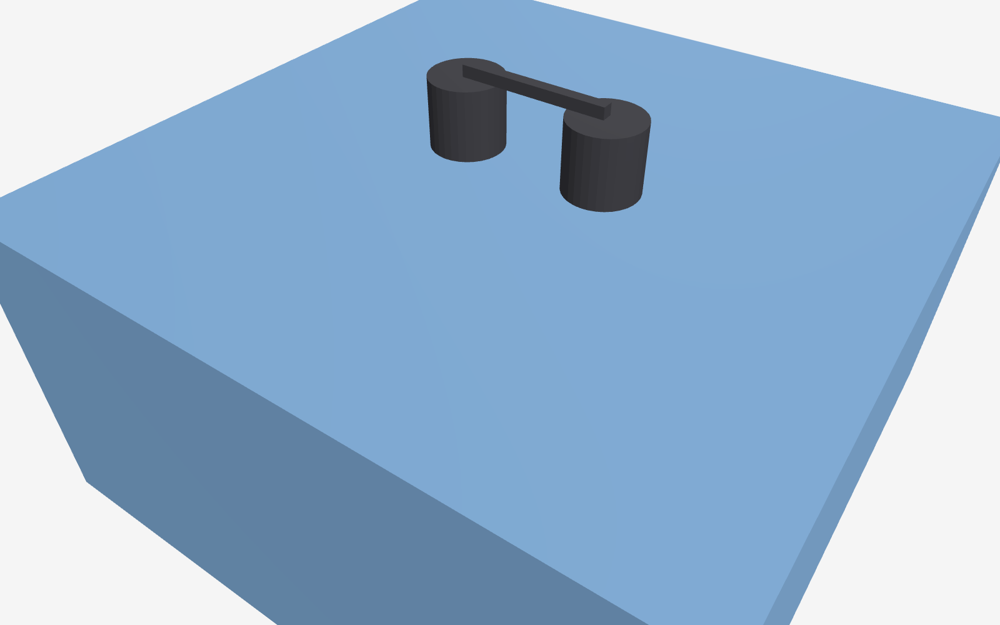
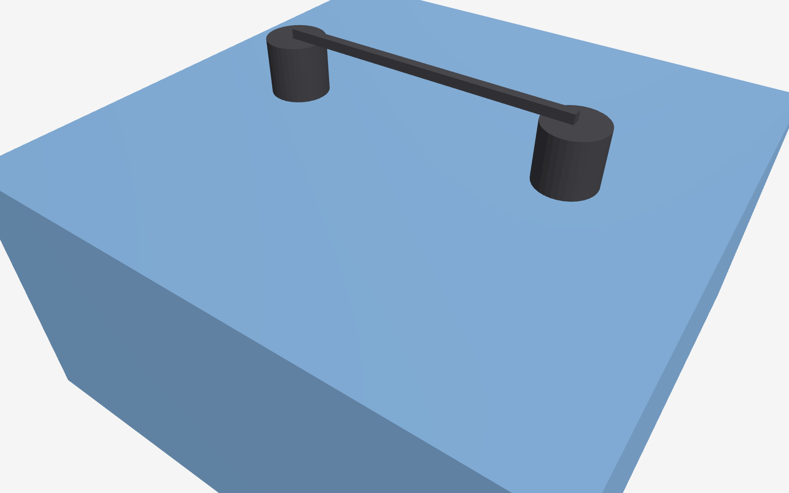
两张图只差两个凸台之间的距离。深灰色是一个刚体：两个半径 \(a=0.25\)、高 0.5 的平底圆柱凸台，顶上用一根细杆连成一体；蓝色是同一块（图里只拍了块顶面中间一部分）。上图两凸台中心距 \(L=4a=1.0\)，下图拉开到 \(L=10a=2.5\)，凸台大小和压深 0.024 都不变。
裁判：每个凸台的力 \(F=\dfrac{2E^{*}a\,\delta}{1+2a/(\pi L)}\)
推导（两凸台对称，受力均为 \(F\)）
- 凸台自身力造成的下沉：由 E2 第 8 步 \(F=2E^*a\delta\) 反解，受力 \(F\) 的平底压头下沉 \(\dfrac{F}{2E^*a}\)
- 邻居造成的下沉：由 Boussinesq 点力解（1.4），表面一点受力 \(F\)，距离 \(L\) 处表面下沉 \(\dfrac{F}{\pi E^*L}\)。\(L\gg a\) 时邻居可当作一个点力
-
线弹性下各个力造成的下沉可以直接相加，凸台总下沉 = 压深 \(\delta\)：
\[\delta=\frac{F}{2E^*a}+\frac{F}{\pi E^*L}\]
-
提出 \(F\)：\(\delta=F\Big(\dfrac{1}{2E^*a}+\dfrac{1}{\pi E^*L}\Big)\)，所以 \(F=\dfrac{\delta}{\dfrac{1}{2E^*a}+\dfrac{1}{\pi E^*L}}\)
-
分子分母同乘 \(2E^*a\)：分母变为 \(1+\dfrac{2E^*a}{\pi E^*L}=1+\dfrac{2a}{\pi L}\)，得
\[F=\frac{2E^{*}a\,\delta}{1+2a/(\pi L)}\]
-
分子 \(2E^*a\delta\) 是单独一个凸台的力（E2），所以 \(\dfrac{F}{F_{\text{单独}}}=\dfrac{1}{1+2a/(\pi L)}\)
| \(L\) |
\(2a/(\pi L)\) |
\(F/F_{\text{单独}}=1/(1+2a/(\pi L))\) |
减少 |
| \(4a\) |
\(\dfrac{2}{4\pi}=0.159\) |
\(1/1.159=0.863\) |
约 14% |
| \(10a\) |
\(\dfrac{2}{10\pi}=0.064\) |
\(1/1.064=0.940\) |
约 6% |
| ∞ |
0 |
1 |
0 |
裁判：小压深 BEM（只离散接触面的半空间方法），大压深 PolyFEM（二阶四面体：每条边加中点节点，单元内位移为二次函数）。
hydro：每个凸台的力只由自己的面积和压强决定（1.2 结论），间距不进入公式，力不变。
标签验证：\(a=0.1\)，与同位置只放一个凸台比，每个凸台的能量之比（线弹性下即力比）。网格 \(a/4\)、\(a/8\)，块半宽 2.4、4.8，\(\hat d\) 三档，外推到极限；裁判为 BEM 外推值。压深 0.003、0.006、0.012：
| 中心距 |
BEM 裁判 |
标签 |
hydro |
| \(4a\) |
0.861 |
0.861 |
1 |
| \(10a\) |
0.940 |
0.938 |
1 |
结论：相邻接触区经基体相互卸载，中心距 \(4a\) 时裁判与标签都给出每个凸台的力降到 0.86 倍；hydro 不变。原代码耦合项针对的正是该效应。
E4 粘结薄层、近似不可压：球半径 ×2
设置：厚 \(b\) 的弹性层底面粘结于刚性底座，泊松比 \(\nu\to0.5\)。刚球（半径 \(R\)）压入，同一压深 \(\delta\)，球半径 ×2。hydro 用 (A)。
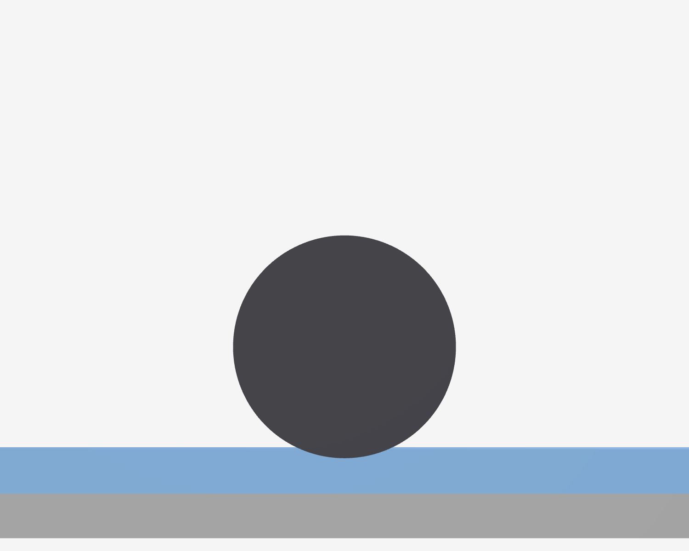
两张图是过球心的剖面，从正侧面看，只差球的半径。浅灰色是刚性底座，蓝色是粘在底座上的薄弹性层（厚 \(b=0.1\)，泊松比 0.499，近似不可压），深灰色是刚球下部（球顶在画面之外）。上图球半径 \(R=2.25\)，下图 \(2R=4.5\)，压深都是 0.02。球越大，球底越平，压进层里的那一段越宽：几何重叠的半宽是层厚的 3 倍（上）和约 4.2 倍（下），都远大于层厚，这正是薄层解成立的条件。
本节用到的量（各向同性线弹性，由 \(E\)、\(\nu\) 确定）
- 泊松比 \(\nu=-\varepsilon_{\text{侧}}/\varepsilon_{\text{轴}}\)：单轴压缩时侧向膨胀应变与轴向压缩应变之比。\(\nu=0.5\) 时体积不变（不可压），橡胶约 0.49–0.4999
- 应变 \(\varepsilon=\Delta L/L\)；剪切应变 \(\gamma=\Delta x/h\)（平行于面的错动量 ÷ 厚度）
- 剪切应力 \(\tau\)：平行于面的单位面积上的力；压强 \(p\)：垂直于面的单位面积上的力
- 胡克定律：\(\sigma_z=\lambda(\varepsilon_x+\varepsilon_y+\varepsilon_z)+2G\varepsilon_z\)，其中 \(G=\dfrac{E}{2(1+\nu)}\)（剪切模量，\(\tau=G\gamma\)），\(\lambda=\dfrac{E\nu}{(1+\nu)(1-2\nu)}\)
- 侧限模量 \(M\)：侧向被约束 \(\varepsilon_x=\varepsilon_y=0\) 时，胡克定律化为 \(\sigma_z=(\lambda+2G)\varepsilon_z\)，所以 \(M=\lambda+2G=\dfrac{E\nu}{(1+\nu)(1-2\nu)}+\dfrac{E}{1+\nu}=\dfrac{E\nu+E(1-2\nu)}{(1+\nu)(1-2\nu)}=\dfrac{E(1-\nu)}{(1+\nu)(1-2\nu)}\)。\(\nu\to0.5\) 时分母 \(1-2\nu\to0\)，\(M\to\infty\)
材料给球让位有两种方式：原地压缩，或从球底下侧向挤出。下面分别推出两种方式下的力，再比较哪种需要的压强小。
推导 1：原地压缩，力 ∝ R
- 层薄、接触区宽时，每根竖直材料柱的侧面被相邻柱挡住，只能沿竖直方向压缩，刚度为 \(M\)
- 离中心 \(r\) 处，压头进入层的深度 \(w=\delta-\dfrac{r^2}{2R}\)（1.4 第 3 步）。这根柱子原长 \(b\)，被压缩 \(w\)，应变 \(\dfrac{w}{b}\)，压强 \(p=M\dfrac{w}{b}\)
-
力 = 压强积分：\(F=\displaystyle\int M\frac{w}{b}\,dA=\frac{M}{b}\int w\,dA\)。\(\int w\,dA\) 为重叠体积，由 E1 第 1 步 \(=\pi R\delta^2\)：
\[F=\frac{M}{b}\cdot\pi R\delta^2=\pi M\frac{R\,\delta^{2}}{b}\]
-
\(F\propto R\)，球半径 ×2 → 力 ×2
- 第 2 步的压强只取决于该点压缩量 \(w\)，与 hydro 的形式（\(p\propto\) 局部深度）相同，hydro 在此情况下正确
推导 2：侧向挤出，力 ∝ R²（量级推导：只保留与 \(a\)、\(b\)、\(\delta\) 的比例关系，略去数值系数）
层很薄时，材料沿层面方向流动，沿厚度方向的剪切起主导作用，这一近似称为润滑近似。
- 需挤出的体积
- 不可压：体积不变；底面粘结：不能向下；顶面被球压着：不能向上。被球占据的体积 \(V\) 只能从接触区侧面流出
- \(V=\pi R\delta^2\)（E1 第 1 步）。接触区取几何重叠，由 1.4 第 4 步 \(a^2=2R\delta\)，即 \(R=\dfrac{a^2}{2\delta}\)，代入：\(V=\pi\cdot\dfrac{a^2}{2\delta}\cdot\delta^2=\dfrac{\pi a^2\delta}{2}\)
-
平均侧向位移
-
剪切
- 底面粘结不动，顶面贴着球，材料在中间被挤动，上下两面位移为 0、中间最大，这是剪切变形
- 剪切应变 \(\gamma\approx\dfrac{\bar u}{b}\propto\dfrac{a\delta}{b^2}\)；剪切应力 \(\tau=G\gamma\propto\dfrac{G\,a\delta}{b^2}\)
-
压强梯度（力平衡）
- 取径向长 \(\Delta r\)、厚 \(b\)、宽 \(w\) 的一小段材料。内侧压强 \(p_1\)、外侧压强 \(p_2\)，作用在侧面（面积 \(b\,w\)）上，净推力 \((p_1-p_2)\,b\,w\)
- 上下两个表面（各面积 \(\Delta r\,w\)）上的剪切应力阻碍它移动，阻力 \(2\tau\,\Delta r\,w\)
- 准静态，两力平衡：\((p_1-p_2)\,b\,w=2\tau\,\Delta r\,w\)
-
两边同除以 \(b\,w\,\Delta r\)：
\[\frac{p_1-p_2}{\Delta r}=\frac{2\tau}{b}\propto\frac{G\,a\delta}{b^3}\]
-
取圆环微元时，侧面和上下表面面积都含因子 \(2\pi r\)，约去后结果相同
- 中心压强
- 边缘处是自由表面，压强为 0；材料从中心往外流，压强从边缘向中心增大
-
从边缘到中心的路径长 \(a\)，压强增加量 = 压强梯度 × 路径长：
\[p_{\text{中心}}\approx\frac{p_1-p_2}{\Delta r}\cdot a\propto\frac{G\,a\delta}{b^3}\cdot a=\frac{G\,a^2\delta}{b^3}\]
-
合力
-
压强从中心最大降到边缘为 0，按抛物线分布，平均值为中心值的 \(\tfrac12\)；合力 = 平均压强 × 接触面积 \(\pi a^2\)：
\[F\approx\tfrac12\,p_{\text{中心}}\cdot\pi a^2\propto\frac{G\,a^2\delta}{b^3}\cdot a^2=\frac{G\,a^4\delta}{b^3}\]
-
换成球半径
- 由 \(a^2=2R\delta\)：\(a^4=(a^2)^2=(2R\delta)^2=4R^2\delta^2\)
- 代入：\(F\propto\dfrac{G\cdot4R^2\delta^2\cdot\delta}{b^3}\propto\dfrac{G\,R^2\delta^3}{b^3}\)
- \(F\propto R^2\)，球半径 ×2：\(\dfrac{(2R)^2}{R^2}=4\) → 力 ×4
推导 3：材料走哪种方式
4. 对比
|
原地压缩 |
侧向挤出 |
| 压强取决于 |
局部压缩量 |
整个接触区 |
| 力 |
\(\propto R\) |
\(\propto R^2\) |
| 球半径 ×2 |
×2 |
×4 |
| hydro（恒为 ×2，E1） |
正确 |
错误 |
裁判实测：近不可压时，线性四面体单元会体积锁死（体积约束过多，算出的刚度虚高），裁判用不锁死的轴对称 FEM，单元取 F-bar（用单元平均的体积变化代替逐点体积变化，减少体积约束数）。层厚 0.1，球半径 2.25 与 4.5，压深 0.01，球半径 ×2 的能量比：\(\nu=0.3、0.45、0.49、0.499\) 时为 1.98、2.24、2.57、2.73。可压时与 hydro 同为 2，越接近不可压越大；此几何下接触半径仅为层厚的 2–4 倍，未到薄层极限，故未达 4。同一网格用普通单元时，\(\nu=0.499\) 能量偏高 22–29%，\(\nu=0.49\) 偏高 2–3%，即锁死程度。
标签验证：同一几何，层厚方向 8 层、网格 0.0125，\(\hat d\to0\)。\(\nu=0.3、0.45\) 时标签比裁判高 0.1–1.9%（判据 3%）；加一档粗网格（0.025，层厚方向 4 层）后，网格加密时标签单调降向裁判，按约二阶收敛外推后与裁判差 −0.4% 至 +0.1%。\(\nu=0.49\) 时高 1.6–9.3%，\(\nu=0.499\) 时高 49–69%，为线性四面体的体积锁死。球半径 ×2 的能量比（压深 0.01）：
| \(\nu\) |
0.3 |
0.45 |
0.49 |
0.499 |
| 裁判 |
1.98 |
2.24 |
2.57 |
2.73 |
| 标签 |
1.97 |
2.21 |
2.48 |
2.40 |
| hydro |
2 |
2 |
2 |
2 |
结论：近不可压薄层中压强由整个接触区决定，球半径 ×2 时力随 \(\nu\to0.5\) 由 ×2 增向 ×4，hydro 恒为 ×2。标签在 \(\nu\le0.45\) 时与裁判差 ≤ 1.9%（\(\nu=0.45\) 时比值 2.21，裁判 2.24），已表现出 hydro 没有的效应；更接近不可压时线性四面体锁死，标签偏硬。
E5 粗模型：刚体 → 仿射体
设置：同一软物体被压，粗模型取刚体或仿射体，物体由矮胖到细长。裁判为线弹性轴对称 FEM。
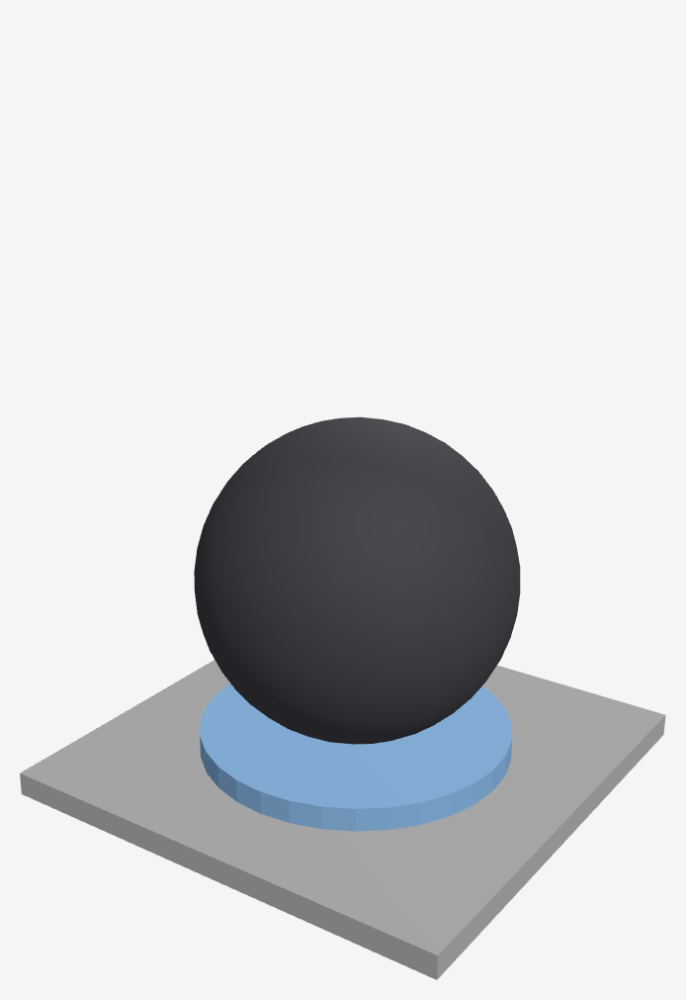
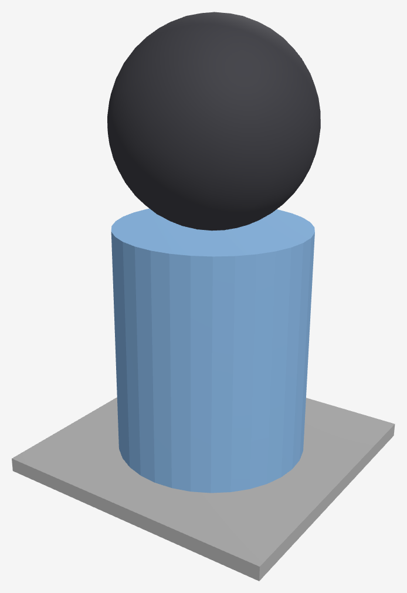
两张图只差软物体的高。浅灰色是刚性底座，蓝色是立在底座上的软圆柱（半径 1），深灰色是刚球（半径 1），压深 0.005（图上看不出）。上图圆柱高 0.15，矮胖；下图高 2.4，细长。物体越细长，整体能被压缩得越多，粗模型取刚体还是仿射体的差别就越大，下面的结果就是比这个差别。
\[U_c=U_{\text{精细}}-U_{\text{粗}}\]
\(U_{\text{精细}}\)：精细无穿透解的弹性能；\(U_{\text{粗}}\)：粗模型自身能表达的弹性能。仿射体可整体压缩，\(U_{\text{粗}}\) 更大，\(U_c\) 更小；物体越细长差异越大。
结果（原代码）：仿射体 \(U_c\) 比刚体小 1.0%→9.6%（线弹性）、7.1%→16.8%（大变形）。
hydro：接触能量不随粗模型改变。刚度按刚体标定时，用于仿射体会重复计入仿射体自身柔度，力偏小。
标签验证：软圆柱半径 1、高 0.15–2.4（五档）、底面固定，刚球压深 0.005 与 0.012。
- 仿射体分走的能量占比 \(\psi(\bar{\mathbf F})V_0/U\)（3.1）：压深 0.012 时标签 1.8%、2.3%、3.6%、7.2%、13.8%，裁判 1.8%、2.3%、3.7%、7.3%、14.1%，差 ≤ 0.003
- 总能量：用 Richardson 外推（见 5.0「方法」）：网格 0.025、0.0125、0.00625 三档（实测收敛阶 \(p\approx1.9\)），\(\hat d\) 取 \(1.25\times10^{-4}\)、\(6.25\times10^{-5}\) 两档；五个高度、两个压深下标签与裁判差 −0.1% 至 +0.5%
结论：正确的碰撞能量随粗模型柔度减小，标签与裁判一致；hydro 不随粗模型改变，物体越细长偏差越大。
5.6 小结
| 实验 |
改变量 |
裁判 |
解析 / 裁判 |
标签 |
hydro |
hydro 缺失的效应 |
| E0 |
— |
Hertz |
1 |
1.003–1.012 |
— |
— |
| E1 |
球半径 ×2（厚块） |
Hertz |
×1.41 |
×1.40–1.43 |
×2 |
变形扩散 |
| E2 |
平底半径 ×4（厚块） |
Boussinesq |
×4 |
×4.00–4.08 |
×16 |
影响深度随压头尺寸变化 |
| E3 |
凸台中心距 \(4a\) |
BEM |
0.861 |
0.861 |
1 |
接触区间耦合 |
| E4 |
球半径 ×2（薄层，\(\nu=0.45\)） |
轴对称 FEM |
×2.24 |
×2.21 |
×2 |
泊松比 / 不可压性 |
| E5 |
刚体 → 仿射体（高 2.4） |
轴对称 FEM |
分走 14.1% |
13.8% |
不变 |
对粗模型的依赖 |
结论：hydro "压强只取决于局部穿入深度、各接触区互不影响"的假设在弹性体上不成立，比值判据下调参无法弥补。本项目标签在 E0–E3、E5 与 E4（\(\nu\le0.45\)）与裁判一致。
5.7 尚未完成的验证
论证链：
- hydro 在 E1–E5 中与裁判不符 — 已完成
- 本项目标签在 E1–E5 中与裁判相符 — 已完成（E4 限 \(\nu\le0.45\)）
- 学到的网络能复现上述倍数关系 — 未验证
现有网络在 BEM 半空间数据上训练，输入只有高度图和压深，没有层厚与泊松比，原理上表达不了 E4 的效应；E3 的相邻区耦合可直接用现有耦合项测试。
问题与待决定
- 近不可压材料：E4 中 \(\nu\ge0.49\) 时 IPC 的线性四面体锁死；libuipc 只提供线性四面体，近不可压材料的标签须换单元或取 \(\nu\le0.45\)
- 网络能否复现：现有网络输入无层厚与泊松比，表达不了 E4；E3 可直接测
- 标签生成代价：E0 验证设置（最细网格 0.00625、块半宽 4.8）单进程显存峰值约 19–20 GB，每档 \(\hat d\) 约 5–10 分钟，三档外推后单样本约 15–30 分钟。需确定低成本批量设置，并用验证设置量出其系统偏差
- 生成工具：原代码用 pyuipc 0.0.25（libuipc 的 Python 接口旧版本）；Genesis 通过外部 pyuipc（新版 libuipc）调用 IPC，新版的软体材料参数换算与求解所用能量不一致，输入 \(E=10^5\)、\(\nu=0.3\) 实际等效为 \(E\approx1.245\times10^5\)、\(\nu\approx0.214\)。传入前预先换算材料参数后实测 \(E=99931\)、\(\nu=0.2998\)；pyuipc 0.0.25 不受影响
- 网络输入：耦合项使用真值曲率；高度图不含倾斜
待决定：标签用 pyuipc 0.0.25 直接生成，还是改用 Genesis（预先换算材料参数）；低成本批量生成设置；近不可压材料的单元选择。